Wireless
CommunicationSystem · Exam Mastery
📌 Official Syllabus · Wireless Communication (BCG-216-V / BCA-23-210)
- Unit I — Introduction to Wireless Communication System: Evolution of wireless communications, examples of wireless communication systems, comparison of various wireless systems. Modern Wireless Communication System: Second generation cellular networks: GSM, third generation wireless networks: CDMA, Introduction to 4G wireless networks, wireless in local loop, wireless local area networks, Bluetooth and Personal Area Networks.
- Unit II — Introduction to Cellular Mobile Systems and Design Fundamental: Spectrum Allocation, Basic cellular Systems, performance criteria, Operation of Cellular systems, Analog cellular systems, Digital cellular Systems. Cellular System Design Fundamentals: Frequency Reuse, channel assignment strategies, hand off strategies (MAHO, MCHO, NCHO), Interference and system capacity, tracking and grade off service, improving coverage and capacity: Cell splitting, Cell sectoring, Zone concepts.
- Unit III — Multiple Access Techniques for Wireless Communication: Introduction to Multiple Access, FDMA, TDMA, spread Spectrum multiple Access, space division multiple access, packet ratio, capacity of a cellular systems.
- Unit IV — Wireless Networking: Difference between wireless and fixed telephone networks, development of wireless networks, fixed network transmission hierarchy, traffic routing in the wireless network, wireless data services, common channel signaling, ISDN (Integrated Service Digital Networks), Advanced Intelligent Networks.
⭐ Important Topics — tap to jump
Click any topic to jump straight to it.
01Introduction to Wireless
& GSM System
Mobile cellular evolution, network components, and near-field scatternet topologies.
GSM System Architecture ⭐ Repeated 5×
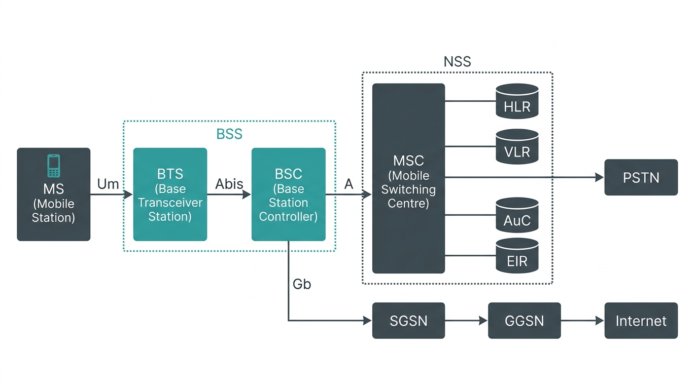
Every 15-mark GSM architecture answer is structured around three logical groups:
| Subsystem Group | Constituent Modules | Role in Network |
|---|---|---|
| Mobile Station (MS) | Handset + SIM Card | Insulates subscriber identity. SIM stores IMSI and A3/A8 security keys. |
| Base Station Subsystem (BSS) | BTS (Transceiver) + BSC (Controller) | Handles radio link connection (Um interface) and local channel allocation. |
| Network Switching Subsystem (NSS) | MSC (Switch) + HLR + VLR + AuC | The brain. Handles routing, billing, user location caching, and authentication triplets. |
GSM Logical Channels — BCH / CCCH / DCCH
The 200 kHz air carrier does not carry only voice. The slots are mapped to a tree of logical channels that split into two trunks: traffic channels (TCH) that carry the coded voice or data, and control channels that carry signalling. Knowing the three control-channel families is the marks-earner in any GSM channel question:
- BCH (Broadcast Channels) — one-way, downlink only, sent to every idle phone in the cell. The BCCH broadcasts cell identity and the neighbour list; the FCCH carries the frequency-correction burst so the handset locks its oscillator; the SCH carries frame synchronisation and the base station identity code (BSIC).
- CCCH (Common Control Channels) — shared point-to-multipoint signalling. The PCH (paging channel) alerts a specific handset of an incoming call; the RACH (random-access, uplink) is the slotted-ALOHA channel the phone uses to request service; the AGCH (access grant) replies with a dedicated channel assignment.
- DCCH (Dedicated Control Channels) — two-way, assigned to one handset. The SDCCH carries call setup, SMS and location updates before a traffic channel is allocated; the SACCH rides alongside the TCH carrying power-control and timing-advance orders; the FACCH steals TCH bursts for urgent signalling such as handover commands.
Bluetooth, Piconets & Scatternets ⭐ Repeated 3×
Bluetooth structures close-range devices using Frequency Hopping Spread Spectrum (FHSS) to prevent interference:
- Piconet: A local network containing up to 8 active devices: 1 Master (boss) coordinating synchronization + up to 7 Slaves.
- Scatternet: Formed when a slave in one piconet acts as a bridge (or master) in an adjacent piconet, chaining them together.
Bluetooth Device States
A Bluetooth radio cycles through a defined set of connection states from power-on to active data exchange. The examiner often asks "explain the Bluetooth states" — name them in order:
- Standby: the default low-power state. The device is on but not part of any piconet; it listens occasionally for inquiry/page messages.
- Inquiry: a device broadcasts inquiry packets to discover other Bluetooth devices in range and collect their addresses and clocks.
- Page: the master pages a known device address to invite it to join the piconet and synchronises it to the master's hop clock.
- Connected / Active: the slave is synchronised to the master's frequency-hopping sequence (1600 hops/s) and actively exchanges data on assigned slots.
- Low-power sub-states (within Connected): Sniff (listens only at reduced intervals), Hold (suspends data but keeps the link), and Park (gives up its active member address but stays synchronised, so more than 7 devices can belong to one piconet).
Evolution of Wireless Communication (1G → 5G) ★ Frequent 5M
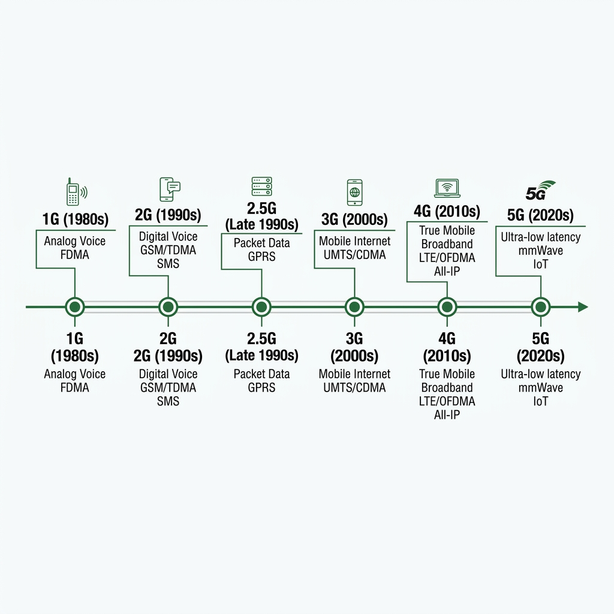
The key migration is from analog FDMA (1G) to digital TDMA/CDMA (2G/3G) to packet-switched OFDMA (4G/5G):
| Generation | Technology | Switching | Data Rate | Key Feature |
|---|---|---|---|---|
| 1G (1980s) | Analog, FDMA (AMPS) | Circuit | ~2.4 kbps | Voice only, no security |
| 2G (1990s) | Digital, TDMA (GSM) | Circuit | ~64 kbps | Digital voice + SMS, encryption |
| 2.5G | GPRS / EDGE | Packet | ~144 kbps | Always-on data, MMS |
| 3G (2000s) | CDMA / UMTS, WCDMA | Packet | ~2 Mbps | Mobile internet, video calls |
| 4G (2010s) | LTE, OFDMA | All-IP packet | ~100 Mbps–1 Gbps | HD video, all-IP, VoLTE |
| 5G (2020s) | NR, mmWave, Massive MIMO | All-IP packet | ~1–10 Gbps | Ultra-low latency, IoT, network slicing |
Comparison of Various Wireless Systems
| System | Range | Mobility | Data Rate | Typical Use |
|---|---|---|---|---|
| Cellular (GSM/LTE) | Up to ~35 km/cell | High (full handoff) | 64 kbps–1 Gbps | Wide-area voice + mobile data |
| Paging | Wide-area (city/national) | Receiver roams | Very low (~tens bps–2.4 kbps) | One-way short alerts to a pager |
| Cordless (DECT) | ~50–300 m | Low (single base) | ~32–1000 kbps | Home/office handset, no handoff |
| WLAN (Wi-Fi 802.11) | ~30–100 m | Limited (within AP) | 11 Mbps–Gbps | Local broadband internet access |
| Bluetooth (PAN) | ~1–10 m | Personal (nomadic) | ~1–3 Mbps | Device-to-device cable replacement |
| Satellite | Global (1000s km) | Fixed / slow | Variable | Remote / maritime / broadcast |
GSM Features & Air-Interface Specifications
- Frequency bands: GSM-900 (uplink 890–915, downlink 935–960 MHz) and DCS-1800 for capacity in cities.
- Hybrid access: the band is split into 200 kHz FDMA carriers, and each carrier is divided into 8 TDMA time slots, so 8 users share one carrier.
- Modulation: GMSK (Gaussian Minimum Shift Keying), spectrally efficient and constant-envelope.
- Frame structure: 8 slots = 1 TDMA frame (~4.615 ms); 26 frames = 1 traffic multiframe; frames group into superframe then hyperframe (used for encryption sync).
- Security: SIM-based authentication using A3/A8 algorithms; over-the-air encryption via A5.
Timing Advance — keeping far bursts inside their slot
near MS (on time)
near MS
far MS, TA-corrected ✓
A mobile 35 km away sees a round-trip delay of ~233 µs. Without correction its burst would slide into the next user’s slot. The BTS measures each burst’s arrival and sends a Timing Advance (TA) value (0–63 bit periods) telling the mobile to transmit early by exactly that delay, so every burst lands aligned at the BTS.
3G (CDMA / UMTS) & 4G (LTE)

| Aspect | 3G (UMTS / CDMA) | 4G (LTE) |
|---|---|---|
| Access scheme | WCDMA (spread spectrum) | OFDMA (down) / SC-FDMA (up) |
| Core network | Circuit + packet (hybrid) | All-IP, fully packet-switched (EPC) |
| Peak data rate | ~2 Mbps (up to 14 Mbps HSPA) | ~100 Mbps–1 Gbps |
| Voice | Circuit-switched | VoLTE (voice over IP) |
| Key gain | Mobile internet, video calls | HD streaming, low latency |
3G / UMTS Architecture (UTRAN + Core)

UTRAN — the radio side
- Node-B: the 3G base station. Handles the W-CDMA physical layer, spreading/despreading, and inner-loop power control. The GSM equivalent is the BTS.
- RNC (Radio Network Controller): manages many Node-Bs over the Iub interface; owns radio-resource control, the soft-handover combining decision, and outer-loop power control. Equivalent of GSM's BSC.
- Interfaces: Uu (UE–Node-B air interface), Iub (Node-B–RNC), Iur (RNC–RNC, enables soft handover across RNCs), Iu (RNC–core).
Core network — reused from GSM/GPRS
- Circuit-switched (CS) domain: MSC for voice, with the same HLR / VLR / AuC databases inherited from GSM — no need to re-engineer subscriber/authentication management.
- Packet-switched (PS) domain: SGSN + GGSN carried over from GPRS, giving always-on IP data and the gateway to the internet.
- Why reuse: operators protected their GSM investment — only the radio access network (UTRAN) was new, so 2G→3G upgrades were incremental, not a forklift replacement.
W-CDMA air interface & soft handover
- 5 MHz wideband carrier: all users share one 5 MHz band, separated by orthogonal codes — contrast GSM's narrow 200 kHz FDMA/TDMA slots.
- Chip rate 3.84 Mcps: the fast spreading rate; the ratio chip-rate÷data-rate is the processing gain
Gp(cross-link below). - Soft handover ("make-before-break"): because every cell uses the same frequency (reuse-1), the UE links to two or more Node-Bs at once and the RNC combines the strongest. No audible gap + diversity gain, unlike GSM's hard handover.
- Frequency reuse-1: CDMA tolerates co-channel interference, so neighbouring cells reuse the same 5 MHz — simpler planning than GSM's reuse-7.
HSPA evolution (3.5G)
- HSDPA (downlink): adds fast scheduling, 16-QAM and HARQ at the Node-B for peaks up to ~14 Mbps.
- HSUPA (uplink): faster uplink (~5.7 Mbps) for symmetric apps like video calling and uploads.
- HSPA+: 64-QAM + MIMO push peaks to ~42 Mbps, bridging the gap to early 4G.
| Parameter | GSM (2G) | UMTS (3G) |
|---|---|---|
| Base station | BTS | Node-B |
| Controller | BSC | RNC |
| Radio access net | BSS / GERAN | UTRAN |
| Access scheme | FDMA/TDMA (200 kHz) | W-CDMA (5 MHz) |
| Frequency reuse | Reuse-7 (clusters) | Reuse-1 (codes) |
| Handover | Hard (break-before-make) | Soft (make-before-break) |
| Peak data | GPRS ~64 kbps | ~2 Mbps → HSPA ~14–42 Mbps |
Worked Example — W-CDMA processing gain (cross-link)
Processing gain ties UMTS straight back to CDMA: Gp = chip rate ÷ data rate. Using the UMTS chip rate W = 3.84 Mcps:
Gp = 3.84 × 10⁶ ÷ 12.2 × 10³ = 314.75.10 · log₁₀(314.75) = 24.98 dB → Gp ≈ 25 dB of spreading gain — voice rides ~25 dB below the wide-band noise floor and is still recovered.Gp = 3.84 × 10⁶ ÷ 384 × 10³ = 10 → 10 · log₁₀(10) = 10 dB. Faster data → less spreading per bit, so it needs more power / a cleaner cell.Wireless in Local Loop (WLL) & WLAN
WLL — Wireless Local Loop
- Connects the exchange to a fixed wireless terminal at the home via radio, not wires.
- Advantages: fast deployment (no trenching or cabling), low installation cost, ideal for rural/remote and rapidly-growing areas.
- Subscriber unit is largely stationary, so no full cellular handoff is needed.
WLAN — 802.11 Wi-Fi
- Infrastructure mode: all devices connect through a central Access Point (AP), which bridges to the wired LAN/internet.
- Ad-hoc mode: devices talk peer-to-peer directly, with no access point (e.g. quick laptop-to-laptop transfer).
- Operates in unlicensed 2.4 GHz / 5 GHz bands; uses CSMA/CA to avoid collisions.
Wi-Fi vs WiMAX
Wi-Fi (IEEE 802.11) is a short-range WLAN technology; WiMAX (IEEE 802.16) is a long-range wireless-MAN technology for last-mile broadband.
| Parameter | Wi-Fi (802.11) | WiMAX (802.16) |
|---|---|---|
| Scope | WLAN — local (home/office hotspot) | WMAN — city-wide last-mile broadband |
| Range | ~30–100 m per AP | Several km (up to ~50 km line-of-sight) |
| Data rate | Up to Gbps, shared locally | ~40–70 Mbps shared over distance |
| Band | Unlicensed 2.4 / 5 GHz | Licensed & unlicensed (2–11 GHz) |
| Access / QoS | CSMA/CA contention, best-effort | BS-scheduled slots, built-in QoS |
| Mobility | Limited (within AP) | Fixed + mobile (802.16e handoff) |
PAN, Piconet & Scatternet Topology
- Master (M): sets the frequency-hopping clock; up to 7 active slaves per piconet.
- Slave (S): synchronises to the master hop sequence; extra devices stay parked.
- Bridge: a node that is a slave (or master) in two piconets at once, joining them into a scatternet.
02Cellular Design
& System Optimization
Frequency reuse engineering, handoff triggers, and capacity extension frameworks.
Basic Cellular System & Operation ⭐ Foundation 5M

A cellular network has four core hardware components:
- Mobile Station (MS) — the subscriber handset. Contains the transceiver, control unit and (in 2G) the SIM that holds identity keys.
- Base Station (BS / BTS) — the radio tower for one cell. Holds antennas + transceivers and links every active MS in its cell over the radio (air) interface.
- Mobile Switching Centre (MSC) — the "brain". Coordinates many base stations, performs call setup, routing, billing, location tracking and handoff decisions.
- PSTN link — wired trunk from the MSC to the Public Switched Telephone Network, connecting mobile users to landlines and other networks.
(BS)
(MS)
Frequency Reuse & Cluster Math ⭐ Guaranteed 10M
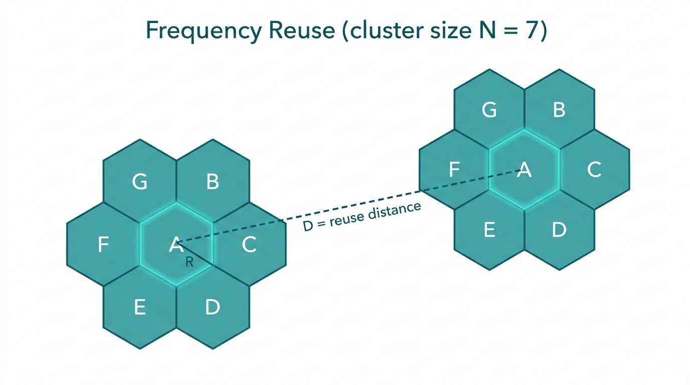
•
Q = D / R = sqrt(3N) (Co-channel reuse ratio)•
Standard N sizes = i² + ij + j² (Common sizes: 3, 4, 7, 9, 12)
A smaller cluster size N increases overall network capacity but reduces the physical distance between co-channel cells, increasing Co-channel Interference (CCI).
N = i² + ij + j² (i, j = non-negative integers), giving N = 1, 3, 4, 7, 9, 12, 13… The co-channel reuse ratio measures how far apart co-channel cells sit relative to cell radius: Q = D / R = √(3N). A larger Q means co-channel cells are farther apart, so less CCI but lower capacity (more channels "wasted" per cluster).
Channel Assignment — FCA vs DCA ⭐ 5M compare
| Parameter | FCA (Fixed) | DCA (Dynamic) |
|---|---|---|
| Allocation | Channels fixed per cell at design time | Channels drawn from a central MSC pool on demand |
| Flexibility | Low — cannot adapt to shifting traffic | High — follows hotspots / rush-hour load |
| Complexity | Simple, low signalling/computation | Complex — MSC must track usage in real time |
| Blocking under uneven load | High (idle channels in quiet cells can't help busy cells) | Low (channels reallocated where needed) |
| Best for | Uniform, predictable traffic | Bursty, uneven traffic |
Interference & System Capacity ⭐ 10M
S/I = (D/R)n/6 = (√3N)n/6.•
S / I = (D/R)^n / 6 = (√(3N))^n / 6 (n = path-loss exponent, typically 4 in urban areas)• Larger N → larger D/R → higher S/I → cleaner calls, but fewer channels per cell.
The first tier has exactly six co-channel cells around any cell (the six equidistant hexagon neighbours of the reuse pattern), which is why the denominator is 6.
Signal Propagation Problems
- Path loss: the signal grows weaker as the distance from the tower increases.
- Shadowing / fading: large obstacles (buildings, hills, trees) block or weaken the signal, so its strength swings up and down as the user moves.
- Multipath: the signal reaches the mobile by several reflected paths that arrive at slightly different times and add up in or out of phase, causing rapid fading and inter-symbol interference (ISI).
- Doppler shift: the movement of the mobile shifts the received frequency.
- Noise & interference: thermal noise plus co-channel and adjacent-channel interference further corrupt the received signal.
Performance Criteria & Grade of Service (GoS)
- Traffic intensity: measured in Erlangs; 1 Erlang = one channel kept busy 100% of the time (e.g. 30 calls/hr × 2 min each = 1 Erlang).
- Coverage: fraction of the service area where signal exceeds the usable threshold (target typically 90–95%).
- Capacity: total simultaneous calls the system can carry — raised by smaller N, sectoring or cell splitting.
- Blocking probability: Erlang B assumes blocked calls are cleared (caller hangs up and retries), the standard model for cellular trunking.
Trunking & the Erlang-B Formula ⭐ 5M numerical
A = λ · H (call-arrival rate × mean holding time). One Erlang = one channel held busy 100% of the time.
- Offered load A (Erlangs) — total traffic users want to place; e.g. 200 calls/hr × 120 s = 200 × (120/3600) = 6.67 E.
- C channels (trunks) — the shared pool serving that load.
- Erlang-B model — assumes blocked calls are cleared (the caller hangs up and does not queue), infinite user population, random Poisson arrivals. This is the standard cellular trunking model.
- Trunking efficiency — large channel groups carry far more load per channel than several small groups at the same GoS, so splitting channels (e.g. sectoring) lowers efficiency.
C channels offered A Erlangs is built up channel-by-channel from B(0,A) = 1:
B(C, A) = A · B(C−1, A) / ( C + A · B(C−1, A) )
c = 1 up to C; the last value is the answer. No factorials, no overflow — exam-safe on a basic calculator.
Worked Example — A = 4 E, C = 6 channels
A cell carries an offered load of A = 4 Erlangs on C = 6 voice channels. Find the blocking probability and check it against the 2% GoS target.
This matches the standard Erlang-B table: read the row for GoS = 0.02 and the maximum load A each channel count can carry.
| Channels C | Max load A (E) @ GoS = 2% | Carried load A·(1−B) | Efficiency A·(1−B)/C |
|---|---|---|---|
| 1 | 0.020 | 0.020 | 2.0% |
| 2 | 0.223 | 0.219 | 10.9% |
| 5 | 1.657 | 1.624 | 32.5% |
| 10 | 5.084 | 4.982 | 49.8% |
| 20 | 13.182 | 12.918 | 64.6% |
Notice the efficiency column climbing from 2% (1 channel) to 65% (20 channels): bigger trunk groups pack more load per channel at the same GoS. Our worked cell (A = 4 E) sits between the C = 5 row (max 1.66 E) and the C = 10 row (max 5.08 E), so 6 channels are far too few — consistent with the 11.7% blocking found above.
- Convert holding time to hours before computing A in Erlangs: 120 s = 120/3600 h, not 120.
- Erlang-B answers the question "what fraction of calls are blocked?" — it is a probability (0–1), never an Erlang value.
- Use Erlang-B (blocked-calls-cleared) for cellular; Erlang-C (blocked-calls-queued) is for call-centre hold queues — do not mix them.
- Always iterate the recursion from
B(0,A) = 1; starting fromB(1,A)skips the base case and gives a wrong answer.
Analog vs Digital Cellular Systems ⭐ BCA-25 Q7(i)
First-generation (1G) cellular was analog (e.g. AMPS); second-generation (2G) onward is digital (e.g. GSM). Digital wins on capacity, security and quality:
| Parameter | Analog (1G) | Digital (2G+) |
|---|---|---|
| Signal / modulation | Continuous wave, FM voice | Bits, digital modulation (GMSK / QPSK) + voice coding |
| Multiple access | FDMA only | TDMA / CDMA (more users per band) |
| Capacity | Low (one user per channel) | High (3–10× via compression + TDMA/CDMA) |
| Security | Poor — easily scanned/eavesdropped | Strong — encryption + SIM authentication |
| Voice quality | Degrades with distance, noisy | Clear; error correction fixes bit errors |
| Extra services | Voice only | SMS, data, caller ID, roaming |
| Example | AMPS, TACS, NMT | GSM, IS-95 (CDMA), IS-136 |
Cellular Handoff MAHO / MCHO / NCHO ⭐ Repeated 6×
A handoff transfers an active call from one radio channel/base station to another as the subscriber crosses cell boundaries:
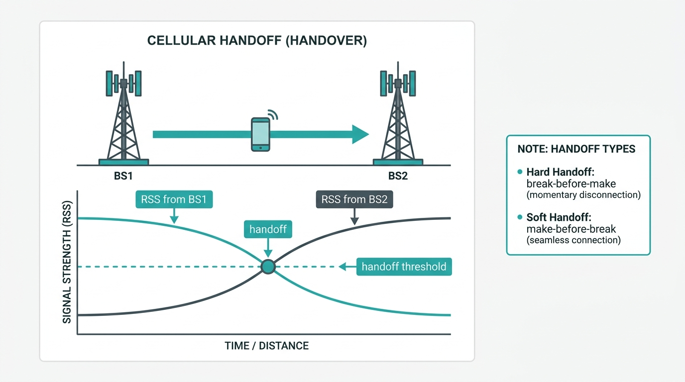
| Handoff Strategy | Who measures? | Who decides? | Standard System |
|---|---|---|---|
| NCHO (Network-Controlled) | Base Station | MSC brain switch | 1G Analog (Slow, ~10s lag) |
| MAHO (Mobile-Assisted) | Mobile phone measurements | MSC switch | 2G GSM (Fast, ~1s lag) |
| MCHO (Mobile-Controlled) | Mobile phone | Mobile phone | DECT / Private WLAN (Instant) |
Capacity Enhancements: Splitting vs Sectoring vs Microzone
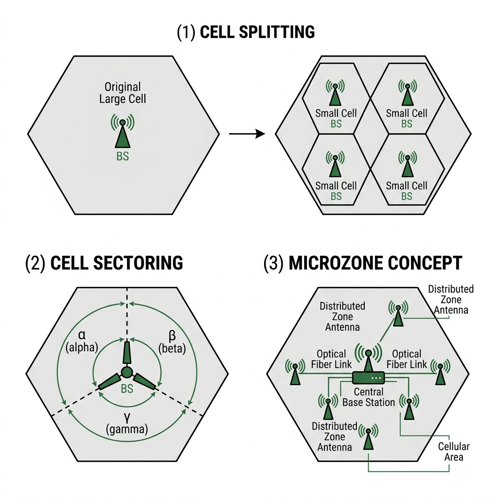
| Technique | Core Mechanism | Advantage | Primary Drawback |
|---|---|---|---|
| Cell Splitting | Subdivide a congested cell into 4 smaller cells with lower-power antennas. | Directly increases capacity by 4×. | Drastically increases signaling load and handovers. High site cost. |
| Cell Sectoring | Replace omni-directional antenna with 3 directional sector antennas (120°). | Decreases co-channel interference ($S/I$ increases ~5 dB). | Reduces trunking efficiency by splitting channels into smaller groups. |
| Microzone | Distribute active micro-antennas inside one cell all wired to one base station. | No handovers between zones inside the cell; excellent indoor coverage. | High cabling infrastructure cost. |
Microzone / Distributed Antenna System (DAS) — plan view
In the microzone (DAS) concept, one base station is wired by fibre/coax to many small distributed antennas spread across the coverage area. The mobile is served by whichever antenna it is nearest, but all antennas share the same BS and channel pool — so moving between zones is a zone switch inside one BS, not a handover. This gives indoor/venue coverage without the handover storm of cell splitting.
Intelligent cell
An intelligent cell uses smart (adaptive) antenna arrays plus dynamic radio-resource control to sense where users are and steer the capacity toward them, instead of radiating evenly in all directions.
- Why needed: to raise capacity and cut interference in dense hotspots without building extra towers.
- Methods: adaptive beamforming (narrow beams aimed per user, i.e. SDMA), dynamic channel allocation, and tight power control working together.
- Result: higher spatial reuse and better signal quality; it is the design idea behind 4G/5G Massive-MIMO smart cells.
03Multiple Access &
Spread Spectrum
Sharing the sky safely using time slots, frequency slots, and unique code mathematics.
Multiple Access: FDMA, TDMA, CDMA, SDMA ⭐ Repeated 4×
• TDMA: Separate users by time slots (all share one frequency in turns).
• CDMA: Separate users by orthogonal mathematical codes (all share same band simultaneously).
• SDMA: Separate users by pointing narrow spatial antenna beams.
Duplexing — FDD vs TDD
Before sharing a channel among users, the two directions of one call must be separated. FDD uses two frequencies; TDD uses two time periods on one frequency.
| Parameter | FDD (Frequency Division Duplex) | TDD (Time Division Duplex) |
|---|---|---|
| Separation | Uplink & downlink on two different frequencies, used at the same time | Uplink & downlink on the same frequency, separated in time |
| Spectrum | Needs a paired band + a guard band between up/down | Single unpaired band + a guard time between up/down |
| Best for | Symmetric traffic (voice) | Asymmetric/bursty traffic (data) — the up:down ratio is tunable |
| Examples | GSM, WCDMA-FDD, LTE-FDD | DECT, TD-SCDMA, TD-LTE, WiMAX |
Power-Control Loop — open-loop estimate + closed-loop correction
CDMA fixes the near-far problem with two cooperating loops. Open-loop power control is a one-shot guess: the MS measures the downlink it receives and sets its uplink power inversely (strong downlink → near the BS → transmit softer). Closed-loop power control then fine-tunes it: the BS measures the actual received SIR and fires up/down 1-bit commands (TPC) ~800–1500 times a second so every mobile arrives at the BS at the same power.
FDMA vs TDMA Frame Split — at a glance
U1
U2
U3
U8
CDMA Walsh Codes & Soft Handoff
- Walsh codes: CDMA separates users with rows of a Hadamard matrix called Walsh codes. Any two distinct Walsh rows are orthogonal — their dot product is exactly zero — so signals coded with different rows do not interfere after despreading. A 64-chip Walsh set (used in IS-95 forward link) supports 64 orthogonal code channels per carrier.
- Walsh vs PN code roles: in IS-95 the Walsh code separates users within one cell (channelisation), while a long PN code with a cell-specific offset separates one cell from the next (scrambling). The two layers work together.
- Soft handoff (make-before-break): because every CDMA cell uses the same frequency, a handset near a cell edge can talk to two or three base stations at once. The network combines all the received copies (selection/maximal-ratio combining) and only drops the weaker leg after the new one is solidly locked — so the call is never cut. This is unique to CDMA.
- Softer handoff: the special case where the two legs are different sectors of the same base station; combining happens inside one BTS, even cheaper than full soft handoff.
- RAKE receiver: a CDMA handset uses several correlator "fingers" to lock onto multipath echoes and onto multiple base stations during soft handoff, then constructively adds them — turning multipath from a problem into a diversity gain.
Spread Spectrum: DSSS vs FHSS ⭐ Repeated 2×
- DSSS (Direct Sequence): Multiplies data bits by a fast Pseudo-Noise (PN) chip code. Low probability of intercept. Used in GPS.
- FHSS (Frequency Hopping): Carrier frequency hops rapidly across many channels according to a PN sequence. Outstanding anti-interference. Used in Bluetooth.
FHSS: Slow vs Fast Frequency Hopping
several symbols per hop • GSM
several hops per symbol • military
FHSS hops the carrier across a set of channels under a PN sequence. The split is by hop rate vs symbol rate: slow hopping sends several symbols per hop (hop rate < symbol rate); fast hopping sends several hops per symbol (hop rate > symbol rate), giving stronger anti-jam at the cost of fast synthesiser hardware. GSM uses slow hopping (~217 hops/s, one hop per TDMA frame).
How FDMA / TDMA / CDMA Divide the Channel
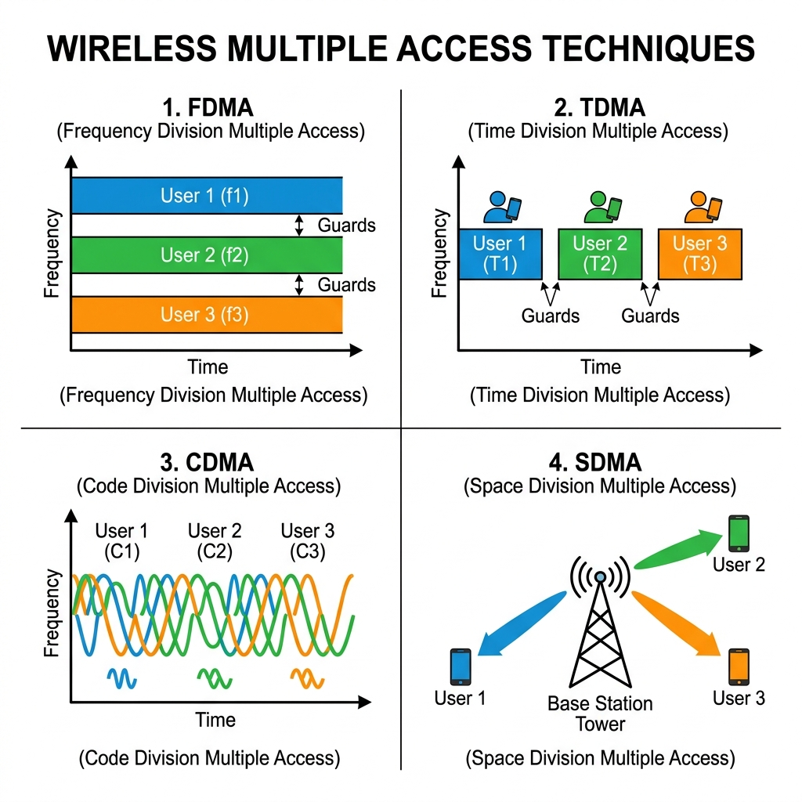
FDMA vs TDMA — Detail & Frame Structure ⭐ BCA-25 Q7(ii)
- FDMA (Frequency Division): Each user gets a dedicated narrow frequency channel for the whole call. Transmission is continuous (no bursting), so no synchronization or equalization is needed. Simple, but a channel sits idle when its user is silent. Used in 1G AMPS.
- TDMA (Time Division): Many users share one carrier frequency by taking turns in repeating time slots. Each user transmits a short burst then stays silent while others use the slot. Needs tight frame synchronization and guard times. More efficient and digital-friendly. Used in 2G GSM (8 slots per carrier).
| Parameter | FDMA | TDMA |
|---|---|---|
| Division basis | Separate frequency bands | Time slots on a shared frequency |
| Transmission | Continuous (one user per band) | Bursty (user transmits only in its slot) |
| Synchronization | Not required | Frame & slot sync required |
| Equalization | Usually not needed | Needed (high burst data rate) |
| Guard band / time | Guard bands between channels | Guard times between slots |
| Hardware / cost | Duplexer per channel, costlier | Shares one radio, lower cost |
| Example system | 1G AMPS | 2G GSM, DECT |
CDMA: Spreading & Despreading (Worked Example)
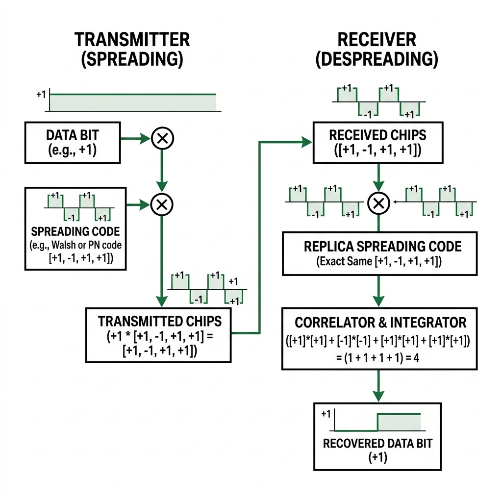
d = +1 multiplies the 4-chip PN code c = (+1,−1,+1,+1) to give the spread chips sent over the air; the receiver multiplies by the same code to despread back to (+1,+1,+1,+1), which sums to +4 and (÷N) recovers bit ‘1’. Because c×c = +1 always, d×c×c = d.Setup: PN code = (+1, −1, +1, +1), length N = 4. Send one data bit = 1 (i.e. +1).
(+1, −1, +1, +1). This 4-chip sequence goes over the air.(+1, +1, +1, +1).Check the other bit (data = 0 → −1): Spread = (−1, +1, −1, −1). Despread with same code = (−1×+1, +1×−1, −1×+1, −1×+1) = (−1, −1, −1, −1). Sum = −4, ÷4 = −1 = data bit 0. ✓
SDMA — Space Division Multiple Access
Packet Radio

- Pure ALOHA: Transmit a packet whenever ready. If two overlap, both collide and are retransmitted after a random delay. Maximum throughput ≈ 18%.
- Slotted ALOHA: Packets may start only at fixed time-slot boundaries, halving the collision window. Throughput doubles to ≈ 37%.
- Trade-off: Simple and decentralized, but throughput collapses under heavy load due to collisions, hence later schemes add carrier sensing / reservation.
Capacity of Cellular Systems
- FDMA / TDMA — hard capacity: A fixed number of frequency/time channels per cell. When all channels are busy the next call is blocked outright. The limit is rigid.
- CDMA — soft capacity (interference-limited): All users share the band, so there is no fixed channel count. Each extra user simply raises the total interference floor. Capacity is reached gradually as interference degrades quality, so operators can squeeze a few more users at the cost of slightly lower quality.
- Boosting capacity: smaller cells (cell splitting), sectorization, and tighter frequency reuse (smaller cluster size N) all raise users-per-area.
04Wireless Networking &
Routing Architectures
Network routing, ISDN architectural channels, and intelligent systems.
Wireless vs Fixed Telephone Networks
| Parameter | Fixed (PSTN) Network | Wireless Network |
|---|---|---|
| Mobility | None — terminal is fixed to a known line | Full — user roams; needs HLR/VLR location tracking |
| Medium / Infrastructure | Guided: copper, coax, fibre, fixed exchanges | Unguided: radio waves, base stations, antennas |
| Bandwidth | High & stable (fibre = Gbps) | Limited & shared — scarce licensed spectrum |
| Reliability / Quality | High; low error rate, no fading | Lower; subject to fading, interference, noise |
| Handoff | Not required | Required as user crosses cell boundaries |
| Security | Harder to intercept (physical wire) | Air interface is open → needs encryption/authentication |
| Setup cost / time | High civil works (digging, cabling) | Faster rollout; tower-based, reaches remote areas |
| Power | Line-powered, unlimited | Battery-limited handset → power control matters |
Why wireless is harder
- Mobility management: the network must always know the cell a subscriber is in (registration, paging, location update).
- Handoff: an active call must transfer between base stations without dropping.
- Limited spectrum: radio bandwidth is licensed and finite → forces frequency reuse and tight channel planning.
- Interference & fading: co-channel interference, multipath fading and noise degrade the open-air signal.
- Security: anyone can receive the air signal → mandatory authentication and ciphering.
Development & Fixed-Network Transmission Hierarchy
The wired telephone backbone is organised as a hierarchy of switching offices, so a call always climbs only as high as it must, then comes back down. The classic 5-level North-American hierarchy:
- Class 5 — Local Exchange (End Office): the subscriber's nearest switch; the wireless MSC connects in here.
- Class 4 — Toll/Tandem Centre: routes calls between local exchanges within a region.
- Class 3 — Primary Centre: aggregates toll centres.
- Class 2 — Sectional Centre: connects primary centres across a larger area.
- Class 1 — Regional Centre: the top tier, linking sections nationwide.
Digital Transmission Hierarchy — PCM → E1 → PDH → SDH
1 voice ch
64 kbps
×32 slots
30B+sig+sync
2.048 Mbps
×4
120 ch
8.448 Mbps
×4
480 ch
34.368 Mbps
×4
1920 ch
139.264 Mbps
SDH
~1920 ch
155.52 Mbps
- PDH (Plesiochronous Digital Hierarchy) — the older E-carrier ladder used in Europe/India: E0 64 kbps → E1 2.048 Mbps (30 voice + 1 signalling + 1 sync = 32 slots) → E2 8.448 → E3 34.368 → E4 139.264 Mbps. Each level carries 4× the one below. (US T-carrier: T1 = 1.544 Mbps = 24 channels.)
- SDH (Synchronous Digital Hierarchy) — the modern fibre standard with a single master clock; base rate STM-1 = 155.52 Mbps, then STM-4, STM-16… (×4 each). Allows direct drop-and-insert of one channel without de-multiplexing the whole stream — unlike PDH.
8000 samples/s × 8 bits = 64000 bps → 64 kbps.32 slots × 64 kbps = 2048 kbps → 2.048 Mbps (of which 30 slots = 30 × 64 = 1920 kbps carry voice).Traffic Routing in a Wireless Network ⭐ BCA-25 Q5(b) · 7M
Mobile-Originated Call (MOC) — handset calls out
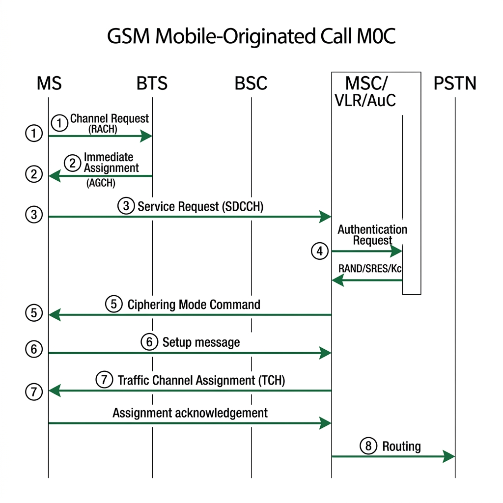
- MS sends the dialled number + its identity to the BS over the air interface.
- BS forwards to the serving MSC.
- MSC queries the VLR to authenticate and verify the subscriber is allowed to make the call.
- MSC routes the call to the destination — into the PSTN (if landline) or to the destination MSC (if another mobile).
Mobile-Terminated Call (MTC) — someone calls the handset
MSC
lookup
MSC/VLR
(paging)
- The call reaches the Gateway MSC (GMSC) of the called number's home network.
- GMSC queries the HLR, which knows which MSC/VLR area the subscriber is currently in and returns a routing number (MSRN).
- Call is routed to the serving MSC, which asks the BS to page the handset across the cell.
- MS responds, a traffic channel is assigned, and the call connects.
Wireless Data Services
- SMS (Short Message Service): up to 160-character text carried over the signalling channel — no dedicated voice channel needed, store-and-forward via an SMS Centre (SMSC).
- GPRS (General Packet Radio Service, "2.5G"): adds packet-switched data over GSM, billed by data volume not time; always-on connectivity for email/web.
- Circuit-switched data: a dedicated channel is held for the whole session (like a voice call) — wasteful for bursty data.
- Packet-switched data: data split into packets sharing the channel on demand — efficient for bursty traffic, the basis of GPRS/3G/4G.
Early Dedicated Wireless-Data Networks — CDPD, ARDIS, RAM (Mobitex)
Mobile End
System
Mobile Data
Base Station
Mobile Data
Intermediate Sys
Fixed Host
- CDPD (Cellular Digital Packet Data): overlays packet data on idle AMPS voice channels. It "hops" onto a 30 kHz channel only while it sits unused, giving up to 19.2 kbps. Connectionless, IP-based, billed by volume — no separate spectrum needed because it scavenges the existing cellular network.
- ARDIS (Advanced Radio Data Information Service): a Motorola/IBM private two-way radio-data network optimised for short, bursty messages and excellent in-building penetration (high-power base stations). Used for field-service / dispatch; ~4.8–19.2 kbps.
- RAM Mobitex: an Ericsson-designed open packet-switched radio-data standard (run by RAM Mobile Data). Connectionless, store-and-forward, ~8–9.6 kbps; famous as the network behind early BlackBerry two-way paging and email.
- MES (Mobile End System): the user's CDPD modem/terminal — the host that originates and receives IP packets over the air.
- MDBS (Mobile Data Base Station): the cell-site radio that detects idle voice channels and relays packets between the MES and the fixed side (channel-hopping is managed here).
- MD-IS (Mobile Data Intermediate System): the CDPD router that performs mobility management (registration, handoff) and forwards packets to the fixed Internet/host — the brain of the network.
| Parameter | CDPD | ARDIS | RAM (Mobitex) |
|---|---|---|---|
| Basis | Overlay on analog AMPS cellular | Private dedicated radio network | Dedicated open standard (Ericsson) |
| Switching | Packet, connectionless IP | Packet, message-oriented | Packet, store-and-forward |
| Peak rate | Up to 19.2 kbps | ~4.8–19.2 kbps | ~8–9.6 kbps |
| Strength | Reuses idle voice channels — no extra spectrum | Strong in-building coverage | Reliable bursty messaging |
| Typical use | Mobile IP, fleet/POS, field data | Field service, dispatch | Two-way paging, early BlackBerry email |
| Parameter | Circuit-Switched | Packet-Switched |
|---|---|---|
| Channel | Dedicated for whole session | Shared on demand |
| Billing | By connection time | By data volume |
| Efficiency | Poor for bursty data | High for bursty data |
| Example | Voice call, old CSD | GPRS, 3G/4G data |
4G / LTE — OFDMA and the All-IP Core
4G LTE replaced 3G's wideband CDMA with OFDMA (Orthogonal Frequency Division Multiple Access) on the downlink and SC-FDMA on the uplink, and dropped circuit switching entirely for an all-IP packet core (the EPC). Key points an examiner rewards:
- OFDMA mechanics: the channel is split into thousands of narrow orthogonal sub-carriers spaced 15 kHz apart. Orthogonality lets them overlap with no guard bands, so spectrum is used far more tightly than in plain FDMA. Users are given blocks of sub-carriers (Resource Blocks) in both frequency and time, so the scheduler can dodge faded sub-carriers.
- SC-FDMA on uplink: LTE uses single-carrier FDMA upstream to cut the peak-to-average power ratio (PAPR), which saves handset battery and keeps the power amplifier efficient.
- All-IP / VoLTE: with no circuit-switched domain, even voice rides as IP packets over VoLTE (Voice over LTE), giving HD voice and faster call setup.
- MIMO: 4G adds multiple antennas (e.g. 2×2, 4×4 MIMO) for spatial multiplexing — sending independent data streams on the same time-frequency block to multiply throughput.
- Flat architecture: the LTE radio network (E-UTRAN) is just eNodeBs with no separate controller (the old BSC/RNC function folds into the eNodeB), cutting latency to ~10 ms.
Cell Sectoring — Directional Beams
radiates 360°, 6 interferers
only 2 interferers, S/I up ~4.7 dB
Common Channel Signaling (CCS / SS7)
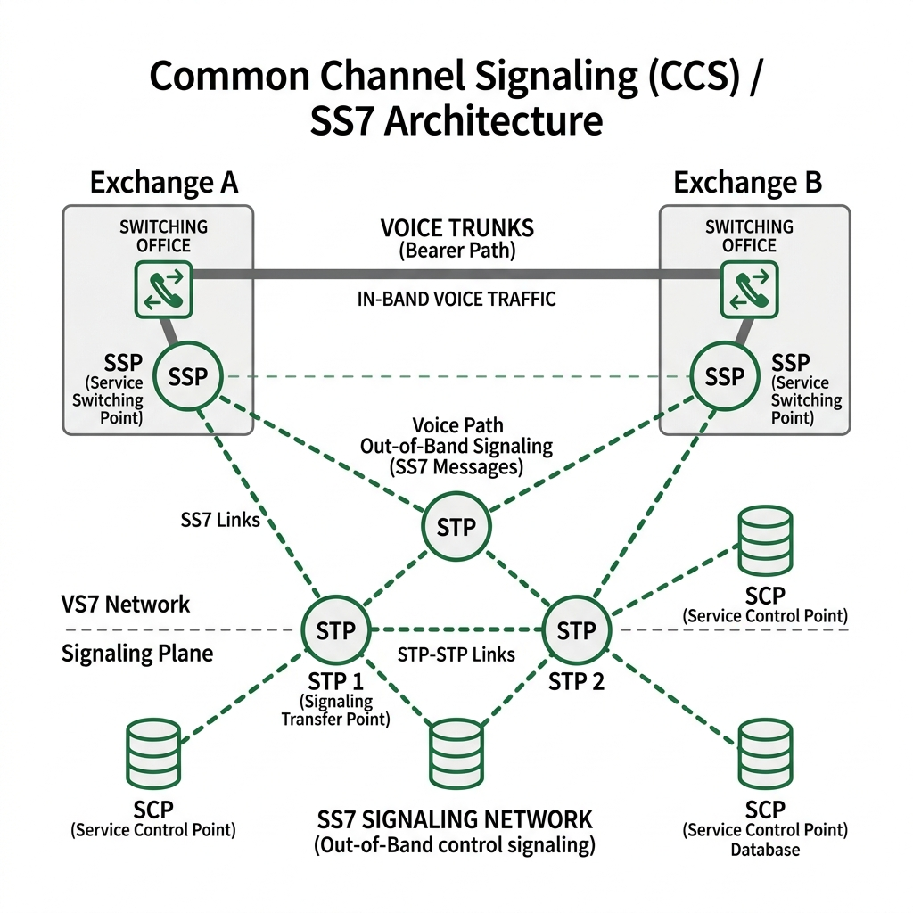
Why CCS/SS7 is efficient
- Faster call setup: signalling messages travel on their own fast packet network, not tied to seizing a voice circuit first.
- No wasted voice channels: the voice trunk is occupied only after the call is actually answered.
- Enables intelligent services: SS7 links MSCs to the HLR/VLR and to AIN databases — the backbone of roaming, caller-ID, toll-free and number-portability.
- Security: because users have no access to the signalling channel, control-tone fraud (e.g. old "blue-box" tricks) is impossible.
ISDN & AIN Architectures
- ISDN (Integrated Services Digital Network): Integrates voice and data over standard phone lines, fully digital end-to-end.
- AIN (Advanced Intelligent Network): Decouples call-routing databases from physical switches. Allows rapid deployment of custom services (toll-free numbers, call forwarding, number portability) without updating local exchange software.
ISDN channels
- B-channel (Bearer): 64 kbps — carries the actual user payload (voice or data).
- D-channel (Delta): carries out-of-band signalling (call control) — 16 kbps in BRI, 64 kbps in PRI.
| Interface | Channel make-up | Typical use |
|---|---|---|
| BRI (Basic Rate) | 2B + D (2×64 + 16 kbps) | Home / small office |
| PRI (Primary Rate) | 30B + D (Europe) / 23B + D (US) | Business PBX, trunk lines |
Narrowband vs Broadband ISDN
- N-ISDN (Narrowband): the BRI/PRI service above, built on 64 kbps channels over copper.
- B-ISDN (Broadband): high-speed multimedia (video, high-rate data) carried over ATM on fibre, far beyond N-ISDN rates.
Model Exam Paper · 2026
Calibrated predicted theory questions with complete model answers matching the academic marking rubric.
- Definition: WLL links home phones to the local exchange using a short radio link instead of copper wires.
- Main advantage: very fast and cheap to set up in villages.
- Example: how BSNL rolled out fixed wireless in rural India.
- Frequency reuse: the same radio channels are used again in cells that are far apart; low-power antennas keep the signals from clashing.
- Co-channel cells: cells that share the same channels are called co-channel cells.
- Example: Jio reuses the same 4G band across many Mumbai towers.
- More users fit in same band: TDMA/CDMA pack many calls into one band.
- Safe locked calls: A5/1 cipher and SIM card check who you are. No phone cloning.
- SMS and data work: text messages and slow internet through GPRS/EDGE — what early Airtel phones used.
- Definition: GoS tells the chance that a call is blocked during the busy hour.
- Standard target: GoS ≤ 2% — out of 100 calls, no more than 2 should fail.
- Use: Indian operators like Airtel and Jio plan tower count to stay below this 2% limit.
| Parameter | Hard Handoff | Soft Handoff |
|---|---|---|
| Definition | "Break-before-make": drops the old tower link first, then joins the new one. | "Make-before-break": phone talks to both old and new towers at the same time during the switch. |
| Example | 2G GSM, IS-136 TDMA networks. One short ~200 ms gap during switch. | 3G CDMA (IS-95, CDMA2000, UMTS). A combiner at MSC merges both signals smoothly. |
- Definition: CDMA lets many users share the same frequency band at the same time.
- Mechanism: each user has a unique code that keeps signals apart, like every speaker in a noisy room using a different language.
- Processing Gain:
G_p = Chip Rate / Data Rate.
The AuC triplet has three parts:
- RAND: a random number sent to the phone as a challenge.
- SRES: the signed reply the phone gives back, made from RAND and the secret key Ki using A3.
- Kc: the cipher key built from RAND and Ki using A8. It locks the call with A5 encryption.
- Definition: a scatternet is formed when two or more Bluetooth piconets are joined.
- Bridge device: one device is a slave in one piconet and a master or slave in another.
- Example: your Bluetooth earbuds and smartwatch both connecting through your phone.
- Problem: the near-far effect happens when a phone close to the tower shouts so loud that it drowns out weak signals from far-away phones.
- CDMA fix: the tower keeps sending power-control orders so every phone reaches it at the same strength.
- Analogy: like asking the front-row student to whisper so the back row can be heard.
- Pure ALOHA: top throughput = 18.4% (when G = 0.5).
- Slotted ALOHA: top throughput = 36.8% (when G = 1.0).
- Why double: fixed time slots cut the collision window in half.
- Very short range: the handset stays tied to its base unit (~50 m), so there is no handoff or mobility between base stations.
- Interference: it shares the unlicensed ISM band, so interference is common.
- Poor security: early analog cordless calls were easily eavesdropped.
- Limited capacity: one base unit serves only a limited number of handsets.
- High data rate: up to 1 Gbps, enough for HD streaming and video calls.
- All-IP packet-switched core: voice and data over one IP network (LTE).
- Low latency and better spectral efficiency using OFDMA + MIMO.
- Seamless global roaming with smooth handover between cells.
- Best fit: a hexagon best approximates the circular radio coverage of a tower.
- Tiles perfectly: covers the plane with no gaps and no overlap, using the fewest cells for a given area.
- Simple planning: gives 6 equidistant neighbours, which simplifies frequency planning and reuse-distance calculation.
- For the handset: generally no — the user moves and rotates unpredictably, so an omnidirectional antenna is needed to receive from any direction.
- For the base station: directional antennas are useful (sectoring into 120°/60° sectors) to cut co-channel interference and boost capacity.
- Definition: a scatternet is two or more Bluetooth piconets joined by a shared bridge node.
- Bridge node: a device that is a slave in one piconet and master or slave in another.
- Benefit: extends coverage beyond a single 8-device piconet.
- Space: co-channel cells reusing the same channel overlap geographically.
- Time: multipath echoes arrive at different delays and collide in time (ISI).
- Frequency: an adjacent channel leaks energy into the wanted band (adjacent-channel interference).
- Shift parameters: i = 2, j = 2 →
N = i² + ij + j² = 4 + 4 + 4 = 12. - Cluster: one cluster has 12 cells, each assigned a distinct channel group.
- Tiling: the 12-cell pattern then repeats across the coverage area.
- Effect: a nearby strong mobile can swamp a distant weak one.
- Less severe in TDMA: users are separated by time slots, so the effect is milder than in CDMA.
- Still needed: power control and timing advance so every burst reaches the base station at similar power and timing.
- Definition: ISDN (Integrated Services Digital Network) is an all-digital telephone network that carries voice and data over the same lines.
- Channels: B-channels (64 kbps bearer) and a D-channel (signalling).
- Interfaces:
BRI = 2B + DandPRI = 30B + D(Europe/India).
- Path loss: signal weakens with distance.
- Shadowing / fading: obstacles (buildings, hills) block the signal.
- Multipath: reflections arrive at different times causing ISI.
- Doppler shift: motion shifts the frequency; plus noise and interference.
Introduction
A handoff (handover) moves an active call from one radio channel or one tower to another without dropping the call. It kicks in when the user walks across a cell edge or the signal gets weak. Without handoff, every cell crossing would cut the call. The control logic grew through three steps (NCHO → MAHO → MCHO). The split is about who measures the link and who picks the new tower. The radio-side split is into hard, soft, and softer handoffs based on how the switch happens over the air. A common scene: you walk out of a Mumbai Metro station and your call jumps from the indoor tower to the street tower without breaking.
NCHO — Network-Controlled Handoff
- Who measures: The tower constantly checks the phone's uplink strength and SNR for its own cell, plus neighbouring cells through locator receivers.
- Who decides: The MSC picks. It pulls reports from many towers, picks a better one, and orders the switch.
- Response time: Very slow, 5–10 seconds from trigger to actual switch. Fine for slow vehicles but useless for fast walkers inside small cells.
- Signalling load: Heavy on the BS↔MSC backhaul. The phone is fully passive. It neither measures nor decides.
- Standard: 1G analog systems (AMPS, TACS, NMT). Phased out when digital cellular took over.
MAHO — Mobile-Assisted Handoff
- Who measures: The phone itself. During idle TDMA slots, it scans the BCCH carriers of up to 6 nearby cells (the BA-list) and measures RxLev / RxQual.
- Who decides: The phone sends its report every SACCH frame (around 480 ms in GSM) to the serving BSC. The BSC + MSC rank the cells and order the switch.
- Response time: Fast, 1–2 seconds. Works well up to 120 km/h vehicles and walking speed.
- Network parts: Phone measures. BTS forwards reports. BSC runs the algorithm (BSC-local handovers stay local). MSC steps in only for cross-BSC and cross-MSC cases.
- Standard: 2G GSM, IS-136 (D-AMPS), 3G UMTS. The main method in today's cellular networks.
MCHO — Mobile-Controlled Handoff
- Who measures: Phone. Same as MAHO.
- Who decides: The phone itself picks the new tower and starts the switch. The network is told after and just re-routes traffic.
- Response time: Near-instant, under 100 ms. Good for private indoor systems where you cross cell edges often inside one office floor.
- Signalling load: Very light on the network. Most logic sits in the phone. Trade-off: handsets are more complex and use more battery.
- Standard: DECT cordless, early Wi-Fi roaming, private Bluetooth networks. Not used in big cellular because operators want to keep handover rules under their own control.
Strategy Comparison Table
| Axis | NCHO | MAHO | MCHO |
|---|---|---|---|
| Who measures | Tower only | Phone (reports to network) | Phone only |
| Who decides | MSC (central) | BSC / MSC (network) | Phone itself |
| Response time | 5–10 s | 1–2 s | < 100 ms |
| Network load | Heavy on MSC | Balanced (BSC does most) | Very light, spread out |
| Phone complexity | Low (passive) | Medium (scan + report) | High (full decision logic) |
| Typical system | 1G AMPS / TACS | 2G GSM, 3G UMTS | DECT, private WLAN, Bluetooth |
Radio-Side Classification — Hard vs Soft vs Softer Handover
| Type | Mechanism | Example | Trade-off |
|---|---|---|---|
| Hard ("break-before-make") | Old link drops before the new link is up. One short gap (~150–300 ms). | GSM, IS-136, LTE intra-frequency | Simple, no diversity. Small audible gap or jitter at the switch moment. |
| Soft ("make-before-break") | Phone keeps parallel links to two or more towers during the switch. A combiner at MSC adds the signals. | CDMA IS-95, CDMA2000, UMTS | Zero audible gap and diversity gain, but uses more radio slots during the overlap. |
| Softer | Same as soft, but the two links go to two sectors of the same tower. Combining happens at the BTS, not the MSC. | UMTS within a Node-B | Even faster, no Iub traffic. Works only at sector edges inside one tower. |
Practical Handoff Considerations
- Hysteresis margin: The new cell's RxLev must beat the serving cell's by a fixed margin (around 3–6 dB in GSM) before the switch happens. Without it, quick Rayleigh fades would flip the active cell back and forth.
- Dwell time: The new cell must stay better-than-threshold for a fixed duration (around 5 seconds). This filters out short spikes from multipath or open windows in moving cars.
- Guard channels: A fixed pool of channels in every cell reserved for incoming handovers. Not used for new calls. Trades higher blocking for new calls against lower drop rate for handovers. A 3% guard reserve is usually enough.
- Ping-pong effect: Fast back-and-forth handovers at a sharp cell edge, caused by fading or geometry. Killed by mixing hysteresis + dwell time: the new cell must be both better and better for a while. 3G also uses directional retry — the phone sticks with the last cell unless the new one is much better.
- Cell-dragging: A walker with a strong direct signal sticks to a faraway cell long after they should have switched. This raises signal clash for everyone else. Fixed by an absolute RxLev floor that forces a handover no matter what.
The 4-Stage Handoff Sequence
Modern Relevance
4G LTE and 5G NR drop the old hard handover and use soft handover (CDMA2000/UMTS) and make-before-break X2/Xn handover (LTE/NR). The phone is briefly linked to both source and target cells, so calls do not drop. This is how Jio 5G keeps your WhatsApp video call alive when you cross from one Mumbai cell to the next. Future 6G (3GPP Rel-19+) aims for zero-gap mobility using ML-based handover prediction.
Conclusion
Handoff sits at the heart of cellular mobility. The trade-off between measurement accuracy, decision delay, and signalling load has driven the whole NCHO → MAHO → MCHO → soft handover path. With hysteresis, dwell time, and guard channels, today's networks reach sub-50 ms break times.
Introduction
GSM (Global System for Mobile communications) is the 2G digital cellular standard. It splits the system into four parts: Mobile Station, Base Station Subsystem, Network Switching Subsystem, and Operations Support Subsystem. These four parts talk over four standard interfaces: Um, Abis, A, and SS7 inside the NSS. This clean split lets different vendor gear work together, makes BSNL roaming work on Airtel towers, and helped GSM grow into 3G, 4G, and 5G. GSM uses three main frequency bands:
- GSM-900: uplink 890–915 MHz, downlink 935–960 MHz.
- DCS-1800: 1710–1785 / 1805–1880 MHz (Europe / Asia, used by Indian carriers).
- PCS-1900: 1850–1910 / 1930–1990 MHz (North America).
Each carrier is 200 kHz wide and carries 8 TDMA voice slots.
1 · Mobile Station (MS) — the user end
- Mobile Equipment (ME): the phone hardware (radio chip, DSP, vocoder, screen, keypad, battery). Each phone has a unique IMEI (15 digits) burned in at the factory. The EIR checks the IMEI before giving service.
- SIM (Subscriber Identity Module): the smart card that holds the IMSI (up to 15 digits: 3-digit MCC + 2/3-digit MNC + MSIN), the secret key Ki, the temporary identity TMSI, the cipher key Kc, plus contacts and SMS. The SIM splits identity from hardware: change your Jio SIM into any phone and you keep your number.
- MSISDN (Mobile Station ISDN Number) is the public phone number people dial. It lives in the HLR. The IMSI is private and never goes over the air in plain form after first attach — TMSI is used instead.
- Power classes: phones are usually Class 4 (2 W at 900 MHz) or Class 1 (1 W at 1800 MHz). The BSC tunes the phone's transmit power in 2 dB steps to cut signal clash and save battery.
2 · Base Station Subsystem (BSS) — the radio layer
- BTS (Base Transceiver Station): the radio tower hardware — antennas, radio units per carrier, power amplifiers, combiners, cooling. It runs the Um air link, does GMSK modulation, channel coding, A5/1 cipher, frequency hopping, and timing-advance. The cell tower you see on a Mumbai rooftop is a BTS.
- BSC (Base Station Controller): the brain that controls 10–100 BTS sites over the Abis link. It hands out radio channels, runs the handover decision (handovers inside one BSC stay local and never reach the MSC), manages power-control orders, and pushes BTS traffic to the MSC over the A link.
- TRAU (Transcoder & Rate Adaptation Unit): sits inside the BSC or MSC. It changes the GSM 13 kbps voice codec into 64 kbps PCM used by the landline PSTN.
- Cell types: macrocells (1–35 km), microcells (under 1 km), picocells (indoor, under 100 m). The BSS treats them the same way; only antenna power and timing-advance window change.
3 · Network Switching Subsystem (NSS) — the core
- MSC (Mobile Services Switching Centre): the heart of NSS. It sets up calls, routes them, and tears them down. It talks to the PSTN through SS7, handles handovers between BSCs and MSCs, and tracks billing records. A GMSC (Gateway MSC) is the gate that links calls coming from outside networks for roamers.
- HLR (Home Location Register): the permanent master database of every customer. One per operator (one for Jio, one for Airtel). Holds the IMSI, MSISDN, Ki, service plan, and a pointer to the current VLR. Updated only when a new SIM is given or a location area changes.
- VLR (Visitor Location Register): a local cache next to each MSC. It keeps a small copy of every active customer's HLR record in the area. Cuts millions of HLR queries down to one per location update.
- AuC (Authentication Centre): a locked database, paired with the HLR. It builds the triplet (RAND, SRES, Kc) using A3 and A8 algorithms keyed by your SIM's secret Ki. The VLR gets the triplet, the phone makes its own SRES from RAND, and the VLR checks if both match.
- EIR (Equipment Identity Register): three lists keyed by IMEI. White = allowed, grey = tracked, black = stolen and blocked. Checked every time a phone attaches. This is how stolen phones get banned in India.
4 · Operations Support Subsystem (OSS) — manage & maintain
- NMC (Network Management Centre): top-tier dashboard for the whole network. Used for planning, performance views, and security rules.
- OMC (Operations & Maintenance Centre): regional layer for each BSS. Handles the classic FCAPS jobs: Fault (alarms, tickets), Configuration (cell-plan edits, software updates), Accounting (call records, billing feed), Performance (drop rate, handover success), Security (audit logs, key rotation).
- Joins BSS and NSS over TCP/IP-based Q3 links, usually on a separate management network.
- OSS is the only part a human engineer touches every day. The rest run on their own.
GSM Identifiers Summary
| Identifier | Stored In | Purpose | Visible Over Air? |
|---|---|---|---|
| IMSI (MCC+MNC+MSIN, ≤ 15 digits) | SIM + HLR | Permanent customer ID | Only at first attach. Then TMSI takes over. |
| TMSI (32-bit, VLR-local) | SIM (volatile) + VLR | Short-term ID that hides IMSI | Yes, but only tied to current VLR. |
| IMEI (15 digits, TAC+SVN+CD) | ME firmware + EIR | Hardware ID / stolen-phone ban list | Only on EIR check |
| MSISDN | HLR | The public dialable number | Never sent over air |
| Ki / Kc | SIM + AuC (Ki); SIM + VLR (Kc) | Auth / cipher keys | Never. Used to build SRES and locked traffic. |
| LAI (Location Area Identity) | VLR + paged in BCCH | Marks the location area for paging | Yes, broadcast |
Worked Example — Outgoing Call Setup
- User dials a number. The phone sends a Channel Request on RACH (Um link).
- BTS gives an SDCCH channel. Phone sends a Service Request with TMSI. BSC forwards it to MSC over the A link.
- MSC asks the VLR for the triplet (RAND, SRES, Kc). VLR replies, or fetches it from the AuC over the D link if missing.
- BTS sends RAND to the phone. The phone builds its own SRES using Ki and A3, then sends it back.
- VLR checks if both SRES match. If yes, the phone builds Kc with A8 and the call gets encrypted.
- MSC routes the dialled number to the GMSC. GMSC sends it through SS7 to the PSTN, and the other phone rings.
Modern Relevance
5G NR is the big 2026 standard, but the GSM 2G core is still the voice fallback layer. Airtel, Vodafone Idea, and Jio keep GSM running for CSFB (Circuit-Switched Fallback) and for cheap IoT M2M gadgets that use GSM/GPRS modems for telemetry — like rural water-pump monitors. The clean MS / BSS / NSS / OSS split seeded every later generation. UMTS added RNC + Node-B and the same HLR/AuC. LTE replaced MSC/HLR with the all-IP MME + HSS + SGW/PGW in the EPC. 5G brought in Service-Based Architecture with AMF/SMF/UDM doing the same jobs. The split rule still drives cellular design.
Conclusion
GSM's four-part layered design is the textbook reference for cellular. A clean split between phone (MS), radio (BSS), switching (NSS), and operations (OSS), tied by Um, Abis, A, and SS7 links, lets vendor gear work together and lets you roam from BSNL to Airtel. If you can name the four parts, the IMSI/IMEI/TMSI/MSISDN set, the AuC triplet, and the role of MSC/HLR/VLR/AuC/EIR, you unlock every later question on UMTS, LTE EPC, and 5G SBA.
Introduction
Multiple access answers the question: how do many users share one wireless channel without signal clash. The four classic schemes (FDMA, TDMA, CDMA, SDMA) split the medium along four axes — frequency, time, code, space. FDMA ran 1G analog cellular (AMPS, TACS, NMT). TDMA became the workhorse of 2G GSM and IS-136. CDMA powered the IS-95 / CDMA2000 / WCDMA 3G family. SDMA (long just on paper) finally shipped in mass volume with 4G/5G Massive-MIMO. Real systems mix them: GSM is FDMA + TDMA. LTE is OFDMA. 5G NR is OFDMA + SDMA + power-domain NOMA. Get the four base axes right and everything modern makes sense.
1 · FDMA — Frequency Division Multiple Access
- Axis: Frequency. The total band is sliced into many narrow sub-carriers, each ~25–30 kHz wide in AMPS, with small guard bands between them.
- How it works: Each user gets one sub-carrier for the whole call. The user sends on it non-stop.
- Advantage: Very simple analog hardware. A narrow filter and an FM modulator are enough. No clock sync needed.
- Disadvantage: Wastes band during talker silence (channel sits idle). Guard bands eat 10–15% of the band. No on-demand data rate change.
- Real-world use: 1G AMPS (832 channels × 30 kHz across 25 MHz), TACS, NMT-450/900. Today FDMA-style slicing lives on as the carrier grid in OFDMA.
2 · TDMA — Time Division Multiple Access
- Axis: Time. All users share the same frequency, but send in different time slots of a repeating frame.
- Frame (GSM): One TDMA frame = 8 slots × 577 μs = 4.615 ms. One slot carries 156.25 bits → about 270.833 kbit/s on a 200 kHz carrier. Higher frames stack into multiframes (26 / 51) and superframes for control plus voice traffic.
- Advantage: Flexible. A user can get many slots per frame for higher data rates (HSCSD, EDGE). The phone sends in bursts, so it uses less average power and battery. The receiver can sleep between its own slots (DTX/DRX).
- Disadvantage: Tight time sync across the cell. Each phone must fire its burst inside a ±¼-symbol guard time. GSM fixes this with Timing Advance orders from the BTS. Guard time and sync bits eat ~10% of capacity.
- Real-world use: 2G GSM (8 slots / 200 kHz carrier), IS-136 D-AMPS (3 slots / 30 kHz), DECT, satellite VSAT.
3 · CDMA — Code Division Multiple Access
- Axis: Code. All users send at the same time on the same wide band. Users are kept apart only by unique pseudo-noise (PN) codes (like Walsh codes).
- Spreading gain (Gp): The data bit is XOR'd with a much faster chip sequence. Typical chip rate
W = 1.2288 Mcps(IS-95), data rateR = 9.6 kbps. So G_p = W/R = 1.2288 × 10⁶ / 9.6 × 10³ = 128 ≈ 21 dB. This gain pulls the wanted signal out of the noise floor. - Soft capacity: No hard cap on the number of users. Adding users slowly raises the noise floor for everyone (graceful drop), unlike FDMA/TDMA that hit a hard wall.
- Disadvantage: The near-far effect. A close phone drowns out far ones unless tight power control (~800 Hz updates in IS-95) balances the received powers at the tower. Also needs a strong timing reference, often a GPS clock at the BTS.
- Real-world use: 3G WCDMA, CDMA2000, IS-95. Still lives inside 4G LTE's HARQ sub-layer and 5G NR's broadcast channels.
4 · SDMA — Space Division Multiple Access
- Axis: Space. The same time-frequency slot is reused at different places through directional or beam-formed antennas. The split is by direction, not by frequency, time, or code.
- How it works: A phased-array antenna with N elements can build N independent beams by tuning amplitude and phase per element. Massive-MIMO arrays in 5G NR use 64 to 256 elements per panel and support many user beams on the same PRB at the same time.
- Advantage: Big jump in band-use efficiency. The same band is reused N times per cell. Cuts same-frequency signal clash at the source, not just at the receiver.
- Disadvantage: Complex antenna hardware. Channel-state-information (CSI) feedback adds overhead. Needs rich multipath. Direct line-of-sight can kill the spatial gain. Beams must be re-steered as the user moves.
- Real-world use: 5G NR Massive-MIMO, Wi-Fi 6 (802.11ax) downlink MU-MIMO, satellite spot-beam systems (Starlink, OneWeb).
Multiple Access Schemes Comparison
| Axis | FDMA | TDMA | CDMA | SDMA |
|---|---|---|---|---|
| User separation | Frequency band | Time slot | Orthogonal PN code | Spatial beam |
| Carrier sharing | One user per band | Many users / one band | All users / one wide band | All users / same band, different angles |
| Sync needed | No | Yes, tight (Timing Advance) | Code-phase aligned (GPS at BTS) | Channel-state feedback loop |
| Guards | Guard bands (frequency) | Guard times (slot) | Spreading + power control | Beam null-steering |
| Capacity cap | Hard — # of bands | Hard — # of slots | Soft — clash-limited | Bounded by # of beams / users |
| Band-use efficiency | Low (waste in silence) | Medium | High (with power control) | Very high (reuse in space) |
| Real-world | 1G AMPS | 2G GSM, IS-136 | 3G WCDMA, IS-95 | 5G Massive-MIMO |
CDMA Code Separation & Orthogonality
In CDMA, every active phone gets a unique Pseudo-Noise (PN) code from a set of orthogonal Walsh codes. The dot product of any two different codes $C_A \cdot C_B = 0$, but $C_A \cdot C_A = N$ (where $N$ is chip length). This lets many signals share the same band at the same time without clashing.
Worked Bit-Level CDMA Example
User A has code C_A = [1, -1, 1, -1]. User B has code C_B = [1, 1, -1, -1]. Check: $C_A \cdot C_B = 1(1) - 1(1) - 1(1) + 1(1) = 0$ (orthogonal).
1 (as $+1$) ⇒ sends S_A = +1 × C_A = [1, -1, 1, -1].-1 ⇒ sends S_B = -1 × C_B = [-1, -1, 1, 1].S = S_A + S_B = [0, -2, 2, 0].Result = S · C_A = 0(1) + (-2)(-1) + 2(1) + 0(-1) = 0 + 2 + 2 + 0 = +4.
Divide by chip length N = 4:
+4 / 4 = +1. Bit 1 is recovered.
Worked Numerical — CDMA Spreading Gain
W = 1.2288 Mcps and voice data rate R = 9.6 kbps.Gp = W / R = 1.2288 × 10⁶ / 9.6 × 10³ = 128.Gp(dB) = 10·log₁₀(128) = 21.07 dB. This tells how much the receiver pulls down unrelated clash signals against the wanted one.Boxed answer: Gp = 128 ≈ 21 dB processing gain. Enough to work at receiver input SNR as low as −15 dB (below the noise floor) and still recover the bit.
Modern Relevance
4G LTE and 5G NR use OFDMA (Orthogonal Frequency Division Multiple Access). It is a polished FDMA where sub-carriers are mutually orthogonal, so no guard bands are needed. LTE uplink uses SC-FDMA for lower PAPR. Massive-MIMO in 5G is SDMA at scale (64–256 antennas). Airtel 5G in Bengaluru runs on this. The next 6G generation (3GPP Rel-20+) studies non-orthogonal multiple access (NOMA), where many users share the same time-frequency slot but are kept apart by power level.
Conclusion
FDMA, TDMA, CDMA, and SDMA are the four ways to split a wireless channel. CDMA's math orthogonality unlocked the 3G capacity jump. SDMA's spatial split now powers 5G Massive-MIMO. Real systems mix axes (OFDMA + SDMA + power-domain NOMA) to squeeze the most capacity from a finite band.
Introduction
As cellular customer count grows, operators must scale capacity without buying more costly frequency band. Three classic methods solve this — cell splitting (cut a cell into smaller cells), sectoring (use directional antennas), and microcell zone (spread out low-power zones, one tower). They form the textbook capacity toolkit. Each one trades cost, handover load, and signal clash in a different way. Airtel and Jio use all three across crowded zones like Connaught Place and Mumbai Airport.
The Capacity Upgrades Comparison
| Axis | Cell Splitting | Cell Sectoring | Microzone Cell |
|---|---|---|---|
| Mechanism | Splits a busy cell into 4 micro-cells. Antenna radius cut to R/2. | Swaps omni antenna for 3 directional sector antennas (120°). | Spreads low-power zone antennas inside one cell. |
| Capacity Gain | 4× capacity per area (more channels reuse in the same space). | Medium gain (cuts same-frequency signal clash, lets a smaller N work). | High local capacity (no handoffs between zones). |
| CCI Impact | No change in $S/I$ ratio. | Cuts CCI by limiting clash from omni to only 2 directions. | Big cut in CCI. Power stays in active zones. |
| Key Drawback | High hardware cost. Handover signalling load shoots up. | Cuts trunking efficiency by splitting channel sets into small groups. | High fibre cost between zone antennas and the central tower. |
1 · Cell Splitting — Cut the Cell into Smaller Cells
- Mechanism: A busy cell of radius
Ris cut into four smaller cells each of radiusR/2. New BTS towers go at the new centres. Transmit power drops by 16× (path-loss with n = 4) to keep the same coverage shape. - Capacity formula: Cell area scales as
R². Halving the radius gives(R/R/2)² = 4×more cells per km², so capacity ×4 more channels per km². Cluster size N stays the same, so S/I is unchanged. - Worked numerical: A macro cell of R = 10 km with 100 channels has 100/314 ≈ 0.32 channels/km² in its 314 km² area. Split to R/2 = 5 km gives 4 cells × 100 channels in the same 314 km² → 1.27 channels/km² ⇒ 4× raw capacity.
- Drawback: Costly. Each split needs new tower, backhaul, and land. Handover signalling load jumps roughly 4× because users cross more edges per minute at the same walking or driving speed.
- Used when: A specific cell stays busy (Erlang-B blocking > 2%) and there is space for more sites. The "umbrella cell" trick keeps the original big cell on at low power for fast users (cars on Mumbai-Pune highway), while the new small cells serve slow walkers.
2 · Cell Sectoring — Directional Antennas
- Mechanism: The single omni antenna at the cell centre is swapped for 3 directional antennas at 120° (or 6 at 60°). Each one lights up its own pie-slice and reuses only 1/3 (or 1/6) of the cell's channels.
- Interference cut: With 3-sector 120° antennas, the count of strong first-tier interferers drops from 6 to 2. With 6-sector, it drops to 1. So S/I improves by ~4.7 dB (3-sector) or ~7.8 dB (6-sector) over omni.
- Enables smaller cluster: Better S/I lets the operator drop N from 7 to 4 or 3 and still meet the 18 dB target. This raises reuse density and effective capacity by (7/4) ≈ 1.75× with just an antenna swap.
- Cost: Very low. Only the antenna head is changed. The BTS cabinet, backhaul, and licence stay the same. The cheapest capacity upgrade.
- Drawback: Trunking efficiency drops. Splitting 60 cell-wide channels into 3 sector pools of 20 means each sector's Erlang-B blocking gets worse for the same load (smaller pools waste more channels). Also, crossing sector edges inside the same cell triggers intra-cell sector handovers, adding signalling.
3 · Microcell zone — Spread Antennas, One Tower
- Mechanism: Many low-power "zone" antennas (Distributed Antenna System, DAS) sit across one big cell. They go on street lights, rooftops, lamp posts. All are fed by one central tower through fibre. Each antenna covers a small zone of ~100 m radius.
- Single-BS design: The user's call jumps from one zone antenna to another as they move, but it stays inside the same BTS. The handover is internal and never reaches the BSC. Result: zero classic handovers across the whole macro cell.
- Capacity gain: Each zone has its own set of channels. This gives small-cell capacity across the original macro footprint, with capacity close to splitting but no extra towers.
- Worked numerical: A 1-km macro cell with 60 channels usually carries 60 calls at once. Swap it for 9 zone antennas in a 3×3 grid (each with 60 channels via spatial reuse inside the cell) and effective capacity goes up to ~9 × 60 = 540 channels in the same footprint. Cost is fibre, not towers.
- Drawback: Fibre or coax between zones and central tower is costly to retrofit in old buildings. Best fit: new campuses, airports (Mumbai T2), malls, cricket stadiums where conduit is planned upfront.
Capacity Upgrades Side-by-Side
| Axis | Cell Splitting | Cell Sectoring | Microzone Cell |
|---|---|---|---|
| Mechanism | Cut cell, R → R/2 | Swap omni for 3×120° directional | Many low-power zone antennas, one BTS |
| Capacity gain | 4× per km² (area scales as R²) | ~1.75× by letting a smaller N work (N: 7→4) | High (zone count × original capacity) |
| S/I impact | Same (N unchanged) | Up by ~4.7 dB (3-sector) | Big improvement — directional zones |
| Capital cost | High — new tower per cell | Lowest — antenna swap only | Medium-high — fibre to many zones |
| Handover signalling | ~4× more (more edges) | Plus intra-cell sector handovers | Near zero (intra-BTS zone switch) |
| Trunking efficiency | Slightly worse (smaller pools) | Worse (3 isolated 1/3-pools per cell) | Worst (many small zone pools) |
| Best for | Long-term urban capacity growth | Quick cheap upgrade of existing tower | Indoor venues, campuses, stadiums |
Trunking & Handoff Trade-offs
- Cell splitting is the only method with no cap on capacity growth — you can always split again. But cost rises and handover load scales with the number of new edges.
- Cell sectoring is the cheapest single upgrade. It is the textbook first step for an operator running out of capacity on an old tower.
- Microzone avoids the handover storm of splitting by tying every zone to one central tower. But cost shifts from towers to fibre runs and central racks. Worth it only in busy indoor venues like cricket stadiums and metro stations.
Modern Relevance
2026 networks lean on 5G small-cell densification. It is cell splitting in a new form. Pico and femto cells (10–100 m radius) are dropped into malls, stadiums, and on street furniture like lamp posts and traffic signals. Jio True5G uses this across Delhi. Massive-MIMO + 3D beamforming in 5G NR works as smart sectoring. It uses 64 to 256 spatially-steered beams instead of 3 fixed sectors, so the antenna pattern follows the user. Modern Distributed Antenna Systems (DAS) turn the microzone idea into a product for indoor and venue rollouts (cricket grounds, airports, metro lines). All three classic methods survive — just in software, beam, and fibre form.
Conclusion
Cell splitting, sectoring, and microzone form the cellular capacity toolkit. Splitting buys raw area gain at high capex. Sectoring is the cheapest clash fix. Microzone trades cabling for handover-free indoor capacity. Modern 5G blends all three — small cells (splitting), Massive-MIMO beams (sectoring), and central distributed units (microzone-style DAS). But the basic rule, same-channel reuse at a safe distance, has not changed since the original AMPS design.
(i) Analog cellular (1G) vs Digital cellular (2G/3G).
(ii) FDMA vs TDMA.
(iii) WAN (Wide Area Network) vs WLAN (Wireless LAN).
Differentiate-pair questions are the BCA examiner's signature. Every BCA(DS) WC paper since 2023 carries at least one. Each pair below uses a small table that scores the full 5 marks: 4 axes × ~1 mark each, plus a one-line context note at the end.
(i) Analog Cellular vs Digital Cellular — axes: generation · signal · access [5M]
| Axis | Analog Cellular (1G) | Digital Cellular (2G/3G) |
|---|---|---|
| Generation & Era | 1G — AMPS, TACS, NMT (early 1980s) | 2G GSM, IS-95 (1990s); 3G UMTS, CDMA2000 (2000s) |
| Signal Format | FM voice as a non-stop analog wave. Control signalling sits on a separate FSK channel. | Voice turned into bits by a vocoder (GSM 13 kbps RPE-LTP, AMR 4.75–12.2 kbps). Sent as bits (GMSK in GSM, QPSK/8PSK in 3G). |
| Multiple Access | FDMA only — one 30 kHz channel per user, always on | TDMA (GSM: 8 slots × 200 kHz), CDMA (IS-95: 1.25 MHz wide band with PN codes), or both |
| Capacity per cell | ~10–20 parallel calls per cell (FDMA carriers) | 3–10× more. 50–100 calls in GSM, hundreds in CDMA via soft capacity. |
| Security & Encryption | None. A $50 scanner picked up voice. Phone cloning was common since ESN was sent in plain text. | A5/1 (stream cipher) over air. A3/A8 auth keyed by Ki on the SIM. AuC triplet (RAND/SRES/Kc). The SIM is a tamper-proof smart card. |
| Data Services | Voice only. Modem dial-up at 2.4 kbps over the voice path was the only data option. | SMS (160 chars), GPRS (~60 kbps), EDGE (~200 kbps), 3G HSPA (up to 21 Mbps DL / 5.76 Mbps UL) |
| Handover | NCHO, ~10 s delay, tower-only measurements | MAHO/MCHO, under 1 s delay. Soft handover in CDMA (make-before-break). |
Context note: The 1G→2G shift was driven by tight frequency band, fraud (analog cloning cost US carriers ~$1B/yr by 1995), and the need for safe mobile payments. Digital cellular laid the base for every later generation (LTE, 5G NR).
(ii) FDMA vs TDMA — axes: access · medium [5M]
| Axis | FDMA (Frequency Division) | TDMA (Time Division) |
|---|---|---|
| Separation Axis | Different frequency band per user (30 kHz slot in AMPS) | Different time slot per user, same frequency (577 μs slot in GSM) |
| Carrier Usage | One narrow carrier per user. Sends non-stop, even during silence. | One wider carrier (200 kHz GSM) shared by 8 users in turns. Each user sends only 1/8 of the time. |
| Sync needed | No. Analog FM tolerates timing drift. | Yes, tight. GSM uses Timing Advance (0–63 bit periods, ~0–233 μs) ordered by the BTS to fix propagation delay up to 35 km. |
| Hardware Complexity | Simple. Narrow filter + FM demodulator per user. Analog front-end is enough. | Higher. Digital DSP, slot scheduler, frame buffer, ISI equaliser. |
| Guard Requirements | Guard bands in frequency (2–3 kHz between 30 kHz channels) | Guard times between slots (8.25 bits ≈ 30 μs in GSM) |
| Battery / Power | Sends non-stop. High average current. | Bursty. Phone sends only 1/8 of the time, plus DTX during silence → 3–4× battery life gain. |
| Standard Examples | 1G AMPS (832 × 30 kHz channels), TACS, NMT-450, cordless DECT downlink | 2G GSM (8 slots / 200 kHz), IS-136 D-AMPS (3 slots / 30 kHz), DECT uplink, PDC (Japan) |
Context note: Mix schemes (FDMA + TDMA in GSM, OFDMA in LTE where each sub-carrier is a mini-FDMA cell shared in TDMA fashion) blend both axes for the best band-use efficiency.
(iii) WAN vs WLAN — axes: coverage · medium · standards [5M]
| Axis | WAN (Wide Area Network) | WLAN (Wireless LAN) |
|---|---|---|
| Coverage Geography | City, country, continent. 100s of km per link. Global with peering. | Building / floor. 30–100 m per AP. 250 m max outdoor with directional antennas. |
| Connection Medium | Fibre optic, leased E1/T1 lines, MPLS, satellite, cellular 4G/5G WWAN modems (like a JioFi router) | Wireless RF (Wi-Fi 802.11 family) over unlicensed 2.4 GHz, 5 GHz, 6 GHz ISM bands |
| Data Rate | Backbone 10–400 Gbps. User line 10 Mbps–10 Gbps depending on uplink. | Wi-Fi 5 (802.11ac): ~1.3 Gbps. Wi-Fi 6 (ax): 9.6 Gbps. Wi-Fi 7 (be): ~46 Gbps theoretical. |
| Latency | 5–80 ms depending on distance. Trans-Pacific ~150 ms. | Under 5 ms inside the AP coverage cell. |
| Ownership | Telco / ISP / enterprise WAN provider. Needs spectrum and right-of-way licences. | Owned by enterprise IT or home user. Access points self-installed. No spectrum licence. |
| Mobility | Cellular WAN supports city-wide mobility with smooth handover. Fixed WAN is stationary. | Limited roaming inside the same SSID via 802.11r fast roaming. No carrier-grade handover. |
| Security | IPsec / MPLS VPN tunnels. Carrier-grade isolation. SLA-backed. | WPA2 / WPA3 PSK or 802.1X enterprise. Open to rogue AP / evil-twin attacks. |
| Standards | MPLS, Frame Relay (old), 3G/4G/5G WWAN, SD-WAN overlay, BGP/OSPF routing | IEEE 802.11 a/b/g/n/ac/ax/be (Wi-Fi 1 through Wi-Fi 7) |
Context note: Modern enterprises like Infosys and TCS use SD-WAN overlays to extend WLAN traffic across multiple sites over the public Internet, with zero-trust security at every edge.
Conclusion
Differentiate questions reward clear contrast, not depth. A clean 5–6-row table with distinct axes scores higher than three paragraphs of prose. Memorise 3–4 axes for every common pair (analog/digital, FDMA/TDMA, WAN/WLAN, MAHO/NCHO, ISDN/AIN, DSSS/FHSS, Bluetooth/WLL) and you bank 15 easy marks.
(b) Differentiate between DSSS and FHSS. [5M]
Introduction & Definition
Spread spectrum (SS) is a modulation method that deliberately spreads a narrowband data signal over a bandwidth far wider than the minimum needed to carry the bits. The spreading is driven by a pseudo-noise (PN) code that is independent of the data and known to both transmitter and receiver. It was born in the military (anti-jam, low probability of intercept) and now powers Bluetooth, GPS, and 3G CDMA. The two main families are DSSS (Direct Sequence) and FHSS (Frequency Hopping).
(a) Need for Spreading [part of 10M]
- Anti-jamming (AJ): a narrowband jammer can only sit on a sliver of the wide spread band, so it corrupts a tiny fraction of the energy. After despreading, the jammer is spread thin while the wanted signal collapses back to full power.
- Low probability of intercept (LPI): spread over a wide band the power spectral density drops below the noise floor. Without the PN code an eavesdropper just sees noise — the signal is hidden.
- Multipath resistance: delayed echoes decorrelate from the live PN code, so the receiver rejects them (DSSS RAKE receiver) instead of suffering inter-symbol interference.
- Multiple access: many users share one band with different codes (CDMA = DSSS based) or different hop patterns (FHSS), without hard frequency/time slicing.
- Coexistence in ISM bands: hopping/spreading lets unlicensed devices share crowded 2.4 GHz with Wi-Fi, microwaves, and other Bluetooth piconets gracefully.
Types of Spread Spectrum
- DSSS (Direct Sequence): each data bit is multiplied (XOR'd) by a fast PN chip sequence, smearing it across a wide continuous band. Used in IS-95 CDMA, 802.11b, GPS.
- FHSS (Frequency Hopping): the carrier jumps among many narrow channels in a pseudo-random order set by the PN code. Used in Bluetooth, classic 802.11 FH, military radios.
- THSS (Time Hopping): the signal is sent in pseudo-random short bursts in time. Rare alone; used in UWB.
- Hybrid (DS/FH): combines direct-sequence spreading with frequency hopping for both AJ and LPI; used in military JTIDS / Link-16.
FHSS in Detail
FHSS Working — Transmit Chain
- PN code → frequency synthesizer: a PN code generator feeds k bits at a time to a frequency synthesizer. Each k-bit word selects one of 2k hop frequencies from the hopset. The synthesizer retunes the carrier every dwell.
- Modulation: data first modulates the carrier (usually non-coherent FSK / GFSK, since the carrier phase is lost across a hop), then the modulated signal is up-converted to the currently-selected hop frequency.
- Hopset & dwell: the radio stays on each frequency for the dwell time Td then hops. The full ordered list of frequencies is the hopping sequence; it repeats with the PN code period.
- Receiver: a synchronised PN generator drives the receiver's synthesizer through the same hop sequence, so its local oscillator tracks the transmitter hop-for-hop and despreads (de-hops) the signal back to a fixed IF for the FSK demodulator.
Key FHSS Parameters
- Dwell time (Td): time spent on one frequency before hopping.
Td = 1 / Rh. - Hop rate (Rh): hops per second. Bluetooth = 1600 hops/s.
- Fast hopping: hop rate > symbol rate → several hops carry one data symbol. Best anti-jam; costly synthesizer.
- Slow hopping: symbol rate > hop rate → several symbols sent per hop. Cheaper; Bluetooth is slow-hopping.
Worked Example — Bluetooth Dwell Time & Hop Type
Bluetooth Classic: hop rate Rh = 1600 hops/s, gross bit rate Rb = 1 Mbps, hopset = 79 channels (2402–2480 MHz, 1 MHz spacing).
Td = 1 / Rh = 1 / 1600 = 625 × 10−6 s = 625 µs.N = Rb × Td = (1 × 106) × (625 × 10−6) = 625 bits/hop.k = ⌈log₂79⌉ = 7 bits from the PN generator drive the synthesizer (27 = 128 ≥ 79).Boxed answer: Td = 625 µs, 625 bits/hop → SLOW FHSS; 7 PN bits select the hop frequency.
(b) DSSS vs FHSS — Differentiate [5M]
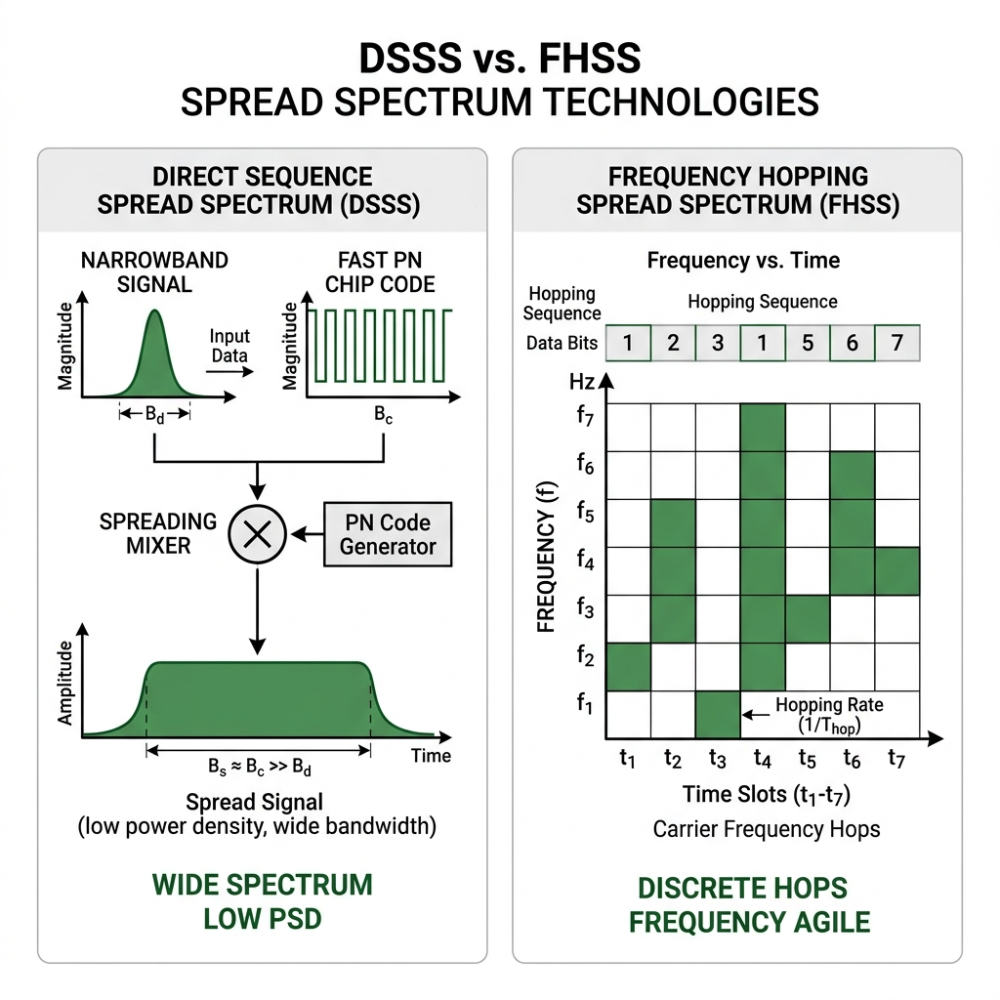
| Parameter | DSSS (Direct Sequence) | FHSS (Frequency Hopping) |
|---|---|---|
| Spreading method | Multiply each bit by a fast PN chip code → one wide continuous band | Hop the carrier among many narrow channels in PN order |
| Bandwidth use | Occupies the whole wide band continuously | Occupies one narrow channel at a time, total band covered over many hops |
| Processing gain | Gp = chip rate / bit rate (e.g. 128) | Gp = number of hop channels (e.g. 79) |
| Anti-jam mechanism | Despreading spreads the jammer thin across the band | Jammer must follow the hop pattern; misses most hops |
| Near-far problem | Severe – needs tight power control | Mild – users rarely on same channel at same instant |
| Synchronisation | Tight chip-level (sub-microsecond) code phase | Coarser hop-level sync (dwell-time scale) |
| Hardware | Fast correlator / RAKE receiver, linear amplifier | Fast agile frequency synthesizer, simpler FSK demod |
| Real-world use | IS-95 CDMA, 802.11b, GPS | Bluetooth, classic 802.11 FH, military radios |
Modern Relevance
Bluetooth (1600 hops/s over 79/40 channels) and Adaptive Frequency Hopping (AFH) in Bluetooth 5 dodge busy Wi-Fi channels in the 2.4 GHz ISM band. GPS and 3G WCDMA use DSSS. Military Link-16 / JTIDS uses hybrid DS/FH for both anti-jam and low-probability-of-intercept. LoRa's chirp spread spectrum is a modern SS cousin powering IoT in India's smart-meter rollouts.
Conclusion
Spreading trades extra bandwidth for anti-jam, security, and multipath resistance. DSSS spreads by a fast chip code over one wide band; FHSS spreads by hopping a narrow carrier under PN control. FHSS dominates short-range coexistence (Bluetooth) while DSSS dominates capacity-driven cellular (CDMA) — and hybrids serve hard military needs.
Introduction
A cellular system is judged on how well it serves users at the busy hour, not just on raw coverage. Engineers track four core performance criteria — voice quality, grade of service (GoS), coverage, and capacity. The first asks "does the call sound clear?", the next "can I get a channel when I dial?", the third "is there signal where I stand?", and the last "how many users can the cell hold at once?". The blocking criterion is computed from offered traffic in Erlangs through the Erlang-B formula. Operators like Jio and Airtel size every cell against these numbers — a target GoS of 2% is the industry norm.
1 · Voice Quality
- What it measures: how clear the received speech is, scored on the Mean Opinion Score (MOS) scale (1 = bad, 5 = excellent); toll-quality target is MOS ≥ 4.0.
- Driven by: received SNR / C/I, codec bit-rate (GSM full-rate vs AMR), and bit-error rate after channel coding.
- Digital advantage: error-correcting codes and interleaving fix bit errors, so 2G+ keeps clear voice where 1G analog degraded with distance.
2 · Grade of Service (GoS)
- Definition: the probability a call is blocked (no free channel) during the busy hour. Industry target = GoS ≤ 2% (0.02) — at most 2 of 100 attempts fail at peak.
- Model: computed by the Erlang-B formula, which assumes blocked calls are cleared (the caller hangs up and retries) — the standard cellular trunking model.
- Trade-off: tighter GoS (e.g. 1%) needs more channels for the same traffic; looser GoS (5%) packs more users per channel but frustrates callers.
3 · Coverage
- Definition: fraction of the service area where the received signal exceeds the usable threshold (typically −100 to −110 dBm). Target is usually 90–95% area coverage.
- Edge effect: coverage is specified at the cell edge, the weakest point; a fade margin (6–10 dB) offsets shadowing and multipath.
- Coverage vs capacity tension: shrinking cells to add capacity (cell splitting) needs more towers to keep the same coverage.
4 · Capacity (Traffic Intensity)
- Traffic intensity is measured in Erlangs; 1 Erlang = one channel kept busy 100% of the time (e.g. 30 calls/hr × 2 min each = 1 E).
- Offered vs carried: offered traffic A is what users request; carried traffic = A×(1−GoS) is what actually flows; the gap is blocked traffic.
- Raising capacity: smaller cluster size N, sectoring, and cell splitting all increase simultaneous calls per unit area.
Erlang-B Formula
For C channels offered A Erlangs of traffic, the blocking probability is:
A⁰/C!
B(C, A) = ---------------- (blocked-calls-cleared)
Σₖ₀…₊ Aⁿ/k!Hand-calculation uses the stable recursion (no large factorials):
B(0, A) = 1
A · B(n−1, A)
B(n, A) = ----------------------
n + A · B(n−1, A)Worked Example — Sizing a 10-channel cell at 2% GoS
B(1)=0.8356 · B(2)=0.6799 · B(3)=0.5354 · B(4)=0.4049 · B(5)=0.2917
B(6)=0.1982 · B(7)=0.1258 · B(8)=0.0740 · B(9)=0.0401 · B(10)=0.0200
Comparison — How the Four Criteria Are Specified
| Criterion | What it answers | Metric / unit | Typical target | Improved by |
|---|---|---|---|---|
| Voice quality | Is the call clear? | MOS (1–5), SNR / C/I (dB) | MOS ≥ 4.0; C/I ≥ 18 dB | Better codec, error coding, larger N |
| Grade of Service | Can I get a channel? | Blocking probability (Erlang-B) | ≤ 2% (0.02) | More channels, trunk pooling |
| Coverage | Is there signal here? | % area above RSS threshold | 90–95% area | Fade margin, more / taller towers |
| Capacity | How many calls at once? | Traffic intensity (Erlangs) | Per cell sizing target | Smaller N, sectoring, cell splitting |
Modern Relevance
In 2026 LTE/5G networks the criteria persist but widen: voice quality is now VoLTE / VoNR MOS over packet links, GoS extends to data drop / scheduling-delay targets, coverage is planned per SINR band for adaptive modulation, and capacity is measured in throughput (Mbps/cell) as well as Erlangs. Jio and Airtel run automated SON (Self-Organizing Network) tools that re-tune power and tilt nightly to hold these four targets across millions of cells.
Conclusion
Voice quality, GoS, coverage, and capacity are the four pillars of cellular system performance. They trade against each other — tighter GoS or wider coverage costs spectrum and towers, while denser reuse raises capacity at the price of interference. The Erlang-B model ties offered traffic, channels, and blocking together, letting operators size every cell to the 2% busy-hour target.
(a) Find the total duplex channels in the system.
(b) Compute voice & control channels per cell.
(c) If cell radius R = 2 km, find co-channel reuse ratio Q and co-channel cell distance D.
Introduction
Frequency reuse is the heart of cellular capacity. The same set of radio channels is used again in cells that are kept a safe distance apart. The pattern is set by the cluster size N. Hex cell shape limits N to values that fit N = i² + ij + j² for whole numbers i, j. Allowed sizes: N ∈ {1, 3, 4, 7, 9, 12, 13, 19, 21 …}. Smaller N packs more reuse per area (more capacity), but co-channel cells sit closer and the S/I ratio drops.
The Co-Channel Distance Formula — Quick Derivation
R, two neighbour cells sit R√3 apart centre-to-centre. Move i cells one way, then j cells at 60°. You land on the nearest co-channel cell, at distance D = R√(3N). So the co-channel reuse ratio is Q = D / R = √(3N). Bigger N gives bigger Q, better S/I, but less capacity.(a) Total Duplex Channels
2 × 25 kHz = 50 kHz = 0.05 MHz.Total = 25 MHz / 0.05 MHz = 500 duplex channels.(b) Voice & Control Channels per Cell
1 MHz / 0.05 MHz = 20 control channels.500 total − 20 control = 480 voice channels.• Voice channels per cell =
480 / 7 ≈ 68.57 → 68 per cell (round down).
• Control channels per cell =
20 / 7 ≈ 2.86 → 3 per cell (round up).
(c) Reuse Ratio Q & Co-channel Distance D
Q = sqrt(3 N) = sqrt(21) ≈ 4.58.
D = Q × R = 4.58 × 2 km = 9.16 km.
Boxed answer: (a) 500 duplex channels, (b) 68 voice + 3 control channels per cell, (c) Q ≈ 4.58, D ≈ 9.16 km.
Sanity Check — Second Scenario (N = 4 Cluster, Smaller Spectrum)
To show the formulas scale, redo with B = 1.5 MHz total, N = 4 cluster, simplex channel 10 kHz (duplex 20 kHz), control = 60 kHz, R = 1.5 km.
Comparing N = 4 vs N = 7 — Capacity / S/I Trade-off
| Parameter | N = 4 | N = 7 | Interpretation |
|---|---|---|---|
| Voice channels per cell (480 voice ÷ N) | 480 / 4 = 120 | 480 / 7 ≈ 68 | Smaller N gives ~1.75× more voice channels per cell, so more capacity per km². N = 7 figure matches Part (b) above |
| Co-channel reuse ratio Q = √(3N) | 3.46 | 4.58 | Bigger Q (N = 7) keeps co-channel cells farther apart |
| S/I (6 first-tier interferers, n = 4) | ≈ 13.8 dB | ≈ 18.7 dB | S/I = (1/6)·Qn. N = 7 comfortably above the 18 dB GSM threshold |
| Verdict | More capacity but only just meets S/I | Standard balance for analog and 2G GSM | Pick N to trade capacity against link quality |
D = √(3N) without the × R part. Q is just a ratio (D/R), but the actual co-channel distance D = Q × R is in km. Drop the multiplication and you lose 1.5–2 marks. Also: when channels per cell are not whole numbers, voice channels round down (no half-channel for voice) and control channels round up (every cell must have at least one signalling channel). And remember: one duplex channel = 2 simplex carriers. Half the students forget the ×2.
Modern Relevance
N = 7 reuse was the 2G GSM standard and still shows up on cell-plan slides. 4G LTE and 5G NR moved to universal reuse (N = 1) with Fractional Frequency Reuse (FFR) and Soft Frequency Reuse (SFR). Phones in the middle of a cell get the full band. Phones at the edge get smaller sub-bands to cut same-frequency signal clash. Hex cluster geometry still lives inside RF planning tools (Atoll, ICS Telecom, RANplan) and is the base idea behind Coordinated Multi-Point (CoMP) sending and 5G beam-based clash control used by Jio True5G in Mumbai and Delhi.
Conclusion
Frequency reuse stays the biggest capacity booster in any radio system. Cut N in half, roughly double the channels per cell. But you also cut Q, shorten the co-channel distance, and weaken S/I. Operators balance these against user density, tower height, and modulation strength. Modern networks push reuse to the limit with universal reuse and smart clash control, but the basics shown above (N = i² + ij + j², D = R√(3N)) still set the cell plan.
Introduction
A GSM call is not a single wire from caller to callee. It is a chain of signalling messages across three subsystems — the Mobile Station (MS), the Base Station Subsystem (BSS) = BTS + BSC, and the Network Switching Subsystem (NSS) = MSC + HLR + VLR + AuC. Setting up a mobile-originated call (MOC) involves channel request, authentication against the security triplet, ciphering, and finally traffic-channel assignment. The same registries (HLR/VLR) that track a roaming user are what make this harder than a fixed PSTN call.
Step-by-Step Call Setup (Mobile-Originated)
(RAND, SRES, Kc) using the A3/A8 algorithms and the secret key Ki. The MSC sends RAND to the MS; the SIM computes SRES' and returns it. If SRES' = SRES, the user is genuine.Kc. From here the air interface is protected.Role of Each Network Element
| Element | Subsystem | Role in the call |
|---|---|---|
| MS (handset + SIM) | MS | Sends channel request; SIM runs A3/A8 to answer the authentication challenge. |
| BTS | BSS | Radio transceiver over the Um air interface; relays bursts to/from the MS. |
| BSC | BSS | Controls many BTSs; allocates radio channels, manages handover within its area. |
| MSC | NSS | The switching brain; runs authentication, ciphering, TCH assignment and call routing. |
| VLR | NSS | Local cache of subscribers currently in the MSC area; holds the working triplet. |
| HLR | NSS | Permanent home database; knows the user's profile and current VLR location. |
| AuC | NSS | Generates the security triplet (RAND, SRES, Kc) from the secret key Ki. |
Modern Relevance
The same registry idea survives in 4G/5G: the HLR/AuC became the HSS/UDM, the MSC's packet role became the MME/AMF, and authentication moved to the stronger AKA (Authentication and Key Agreement) with mutual authentication, fixing GSM's flaw where the network never proved itself to the phone (which enabled fake-tower IMSI-catcher attacks).
Conclusion
A GSM call setup is a disciplined hand-off of control between MS, BSS and NSS: request a signalling channel, prove identity with the AuC triplet, switch on ciphering, then assign a traffic channel and route the call. Naming every element and every channel in order is what banks the full 15 marks.
Introduction
Mobile cellular has evolved roughly one generation per decade, each defined by a leap in the multiple-access scheme, the switching mode (circuit vs packet), and the headline data rate. The ladder runs FDMA → TDMA → CDMA → OFDMA, while switching moved from pure circuit-switched voice to an all-IP packet core. Each jump was pulled by a real-world need: capacity, then security, then mobile internet, then true broadband.
Generational Comparison
| Parameter | 1G | 2G | 3G | 4G |
|---|---|---|---|---|
| Era | 1980s | 1990s | 2000s | 2010s |
| Signal | Analog (FM voice) | Digital (vocoder bits) | Digital | Digital, all-IP |
| Access scheme | FDMA | TDMA / CDMA (IS-95) | WCDMA | OFDMA (DL), SC-FDMA (UL) |
| Switching | Circuit | Circuit (packet in 2.5G GPRS) | Circuit + packet | All-IP packet |
| Data rate | ~2.4 kbps | ~64 kbps (GPRS ~144 kbps) | ~2 Mbps (HSPA up to 21 Mbps) | ~100 Mbps–1 Gbps |
| Security | None (cloning rife) | SIM auth A3/A8, A5 ciphering | Mutual auth (AKA), USIM | Strengthened AKA, IPsec core |
| Key services | Voice only | Voice + SMS, encryption | Video calls, mobile internet | HD video, VoLTE, IoT, gaming |
| Standard examples | AMPS, TACS, NMT | GSM, IS-95, IS-136 | UMTS, CDMA2000 | LTE, LTE-Advanced |
Driving Force Behind Each Jump
- 1G → 2G: driven by capacity and security. Analog systems ran out of channels and could be cloned with a $50 scanner. Going digital tripled capacity and added SIM-based authentication and air-interface encryption.
- 2G → 3G: driven by the demand for mobile internet. TDMA voice slots could not carry web/video; WCDMA's wide band and packet switching delivered Mbps-class data and video calls.
- 3G → 4G: driven by true broadband and all-IP. Smartphones needed streaming-grade speed and low latency, so LTE adopted OFDMA + MIMO and dropped the circuit-switched domain entirely (VoLTE).
Modern Relevance
5G (2020s) extends the ladder with OFDMA + Massive-MIMO (SDMA), mmWave bands, and network slicing for sub-1 ms latency. In India, Jio and Airtel rolled out 5G NR on this base over 2022–24, while 2G GSM still carries fallback voice and IoT in rural areas — so all four generations coexist.
Conclusion
From analog FDMA voice to all-IP OFDMA broadband, each cellular generation answered a concrete pressure — capacity, security, internet, then speed. Memorising the access-scheme ladder and the one-line driver per jump turns this into a reliable 15-mark answer.
(a) A cellular system has 30 MHz total spectrum, a duplex channel of 60 kHz, a cluster size N = 4, and 1 MHz reserved for control. Find total duplex channels, voice and control channels per cell.
(b) For a cluster size N = 12 with path-loss exponent n = 4, find the co-channel reuse ratio Q and the worst-case S/I in dB.
(c) A CDMA system uses a chip rate of 1.25 Mcps and a data rate of 9.6 kbps. Find the processing gain Gp in absolute terms and in dB.
(d) Find the cluster size N for shift parameters i = 2, j = 3 and its reuse ratio Q. A cell carries 1200 calls per hour, each lasting 2 minutes — find the offered traffic in Erlangs.
= band ÷ duplex WN = i²+ij+j²= total ÷ NQ=√(3N)S/I = Qⁿ⁄6= chip ÷ data rateA = calls × hold-hrIntroduction
These four cover the standard cellular formula set: channel partitioning, co-channel interference, spread-spectrum gain, and cluster geometry / traffic. Key formulas used: total channels = total band ÷ duplex width; Q = √(3N); S/I = Qⁿ ⁄ 6 (6 first-tier interferers); Gp = chip rate ÷ data rate; N = i² + ij + j²; offered traffic A = (calls/hour) × (holding time in hours) Erlangs.
(a) Channel Partitioning — 30 MHz, 60 kHz duplex, N = 4
30 000 kHz ÷ 60 kHz = 500 channels.1000 kHz ÷ 60 kHz = 16.67 → 16 control channels (round down to keep whole channels).500 − 16 = 484 voice channels.484 ÷ 4 = 121 (exact); control/cell = ⌈16 ÷ 4⌉ = 4.Boxed answer: 500 duplex channels; 484 voice + 16 control system-wide; 121 voice + 4 control per cell.
(b) Co-channel S/I — N = 12, n = 4
Q = √(3N) = √(3 × 12) = √36 = 6 (exact).Qⁿ ⁄ 6 = 6⁴ ⁄ 6 = 1296 ⁄ 6 = 216.10 · log₁₀(216) = 10 × 2.3345 = 23.34 dB.Boxed answer: Q = 6, S/I = 216 (linear) ≈ 23.34 dB — well above the ~18 dB voice-quality threshold, so N = 12 is a conservative, low-interference plan.
(c) CDMA Processing Gain — 1.25 Mcps, 9.6 kbps
Gp = chip rate ÷ data rate = 1.25 × 10⁶ ⁄ 9.6 × 10³ = 130.21.10 · log₁₀(130.21) = 10 × 2.1147 = 21.15 dB.Boxed answer: Gp ≈ 130.2 ≈ 21.15 dB. The receiver can pull the wanted signal out from roughly 21 dB below the interference, which is why CDMA tolerates a noisy shared band.
(d) Cluster Geometry & Traffic — i = 2, j = 3
N = i² + ij + j² = 2² + (2)(3) + 3² = 4 + 6 + 9 = 19.Q = √(3N) = √(3 × 19) = √57 ≈ 7.55.2 ⁄ 60 = 0.0333 hour. A = 1200 calls/hr × 0.0333 hr = 40 Erlangs. (1 Erlang = one channel held busy 100% of the time.)Boxed answer: N = 19, Q ≈ 7.55, offered traffic A = 40 Erlangs.
Conclusion
One formula set drives all cellular capacity work: channels = band ⁄ width, Q = √(3N), S/I = Qⁿ⁄6, Gp = W⁄R, N = i²+ij+j², and A = calls × holding-time. Substitute, compute, and box — full working earns full marks even if an arithmetic slip creeps in.
(b) Differentiate between ISDN and AIN (Advanced Intelligent Network) using a comparison matrix. [7.5M]
(PC, analog phone)
Adapter
LAN router
termination
(ISDN switch)
(a) ISDN Architecture
ISDN (Integrated Services Digital Network) is a fully digital end-to-end network that carries voice, data and signalling over the ordinary local-loop copper pair. It replaces the analog local loop with a digital pipe split into bearer (B) channels for user payload and a separate delta (D) channel for out-of-band call control. The architecture is defined by functional groupings (the equipment roles) joined at standardised reference points.
Functional Groupings (Equipment Roles)
- TE1 (Terminal Equipment type 1): a native ISDN device (ISDN telephone, ISDN fax) with a built-in S-interface. Connects directly at the S point.
- TE2 (Terminal Equipment type 2): a non-ISDN device (analog phone, ordinary PC with RS-232/V.35). Cannot speak ISDN, so it needs a converter.
- TA (Terminal Adapter): converts a TE2's non-ISDN signalling into ISDN format, sitting between the R and S points.
- NT2 (Network Termination 2): customer-side smart node — a PBX, LAN router or multiplexer doing OSI layer-2/3 switching and concentration. Often omitted in a home BRI.
- NT1 (Network Termination 1): terminates the physical 2-wire U loop from the exchange and presents the 4-wire S/T bus to the premises. Handles layer-1 line coding and power feeding.
Reference Points (Interfaces)
- R: between TE2 and TA (non-ISDN to adapter).
- S: between terminals (TE1/TA) and NT2 — the user "bus" that can carry up to 8 devices.
- T: between NT2 and NT1 (S and T are electrically identical, so often called the S/T bus when NT2 is absent).
- U: the 2-wire digital local loop between NT1 and the Local Exchange (LE).
Channel Structure & Access Types
- B-channel (Bearer): a clear 64 kbps circuit-switched pipe for user payload — digitised voice or data.
- D-channel (Delta): out-of-band signalling (call setup/teardown via Q.931) — 16 kbps in BRI, 64 kbps in PRI. When idle it can also carry low-rate X.25 packet data.
- BRI (Basic Rate Interface): 2B + D = 2×64 + 16 = 144 kbps payload. For home / small office.
- PRI (Primary Rate Interface): 30B + D (Europe E1) or 23B + D (US T1) for a business PBX trunk.
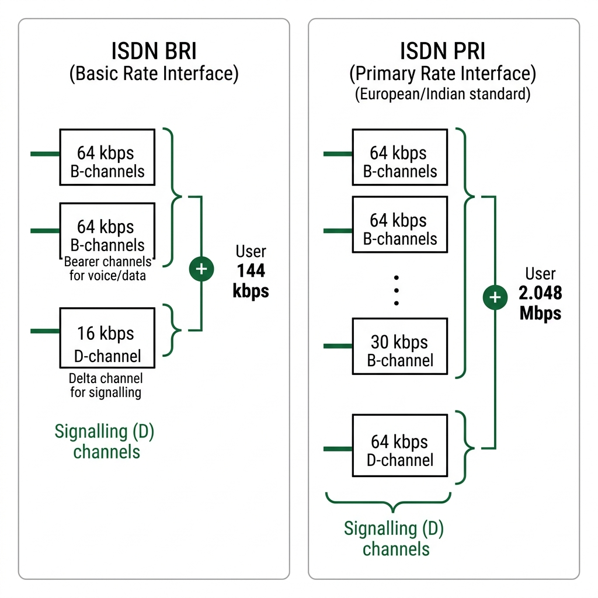
Worked Example — line rates
2×64 + 16 = 144 kbps. The physical line rate adds 48 kbps of framing/synchronisation → 144 + 48 = 192 kbps on the U loop.2.048 Mbps. Slot 0 is framing, slot 16 is the 64 kbps D-channel, leaving 30 × 64 = 1920 kbps of bearer = 30B + D.1.544 Mbps; one slot is the D-channel, leaving 23 × 64 = 1472 kbps bearer = 23B + D.Boxed answer: BRI = 144 kbps payload (192 kbps line); E1 PRI = 30B+D on 2.048 Mbps; T1 PRI = 23B+D on 1.544 Mbps.
(b) ISDN vs AIN — Comparison Matrix
AIN (Advanced Intelligent Network) is not a replacement for ISDN — it is a control-plane overlay. ISDN defines the access pipe to the subscriber; AIN defines where the call-routing intelligence lives inside the network. The two answer different questions, so the contrast is best shown axis by axis.
| Axis | ISDN | AIN |
|---|---|---|
| Full form / nature | Integrated Services Digital Network — a digital access technology for the local loop. | Advanced Intelligent Network — a service-control architecture layered on the SS7 signalling network. |
| Primary goal | Carry voice + data digitally end-to-end over one subscriber line (B + D channels). | Decouple call-routing logic from physical switches so new services deploy fast. |
| Plane of operation | Mostly user / bearer plane — the actual 64 kbps payload pipe, plus D-channel signalling to its own exchange. | Pure control plane — no user payload; it only answers "how should this call be routed?". |
| Key network elements | TE1/TE2, TA, NT1/NT2, LE (Local Exchange). | SSP (Service Switching Point), SCP (Service Control Point), STP (Signal Transfer Point), plus SS7 links. |
| Where intelligence sits | Distributed in each local exchange's software. | Centralised in SCP databases queried via SS7 — switches stay "dumb". |
| Service deployment | New service often needs every switch re-programmed. | Add a row in the SCP and the service is live network-wide instantly. |
| Typical services | Digital voice, BRI/PRI data, videoconferencing, dial-up to ISP. | Toll-free 1-800, number portability, call forwarding, prepaid/calling-card, VPN dialling. |
| Relationship | The access leg that delivers a call to the network. | The brain that decides what to do with that call once it arrives. |
Modern Relevance
Legacy ISDN local loops have largely been retired (BSNL and most European telcos shut down BRI/PRI by the mid-2020s in favour of SIP trunking and VoLTE), but the 2B+D / 64 kbps DS0 granularity it standardised still underlies E1/T1 carrier circuits. The AIN concept of moving service logic out of switches into a central database is the direct ancestor of today's IMS (IP Multimedia Subsystem) and SDN/NFV control planes used by Jio and Airtel, where a centralised controller programs forwarding behaviour on demand.
Conclusion
ISDN answers how the subscriber connects digitally (B + D channels across the R/S/T/U reference points), while AIN answers where the routing intelligence lives (centralised SCP over SS7). One is the access pipe, the other the brain — together they made services like toll-free and number-portability possible long before the all-IP era.
triggers a query
of SS7 msgs
+ database
Introduction
Traffic routing is the process of steering a call from the originating party to the terminating party across the mobile network and, where needed, into the fixed PSTN. In a GSM-style network the MSC (Mobile Switching Centre) is the switching workhorse, while the HLR (Home Location Register, the subscriber's permanent database) and VLR (Visitor Location Register, the local cache of who is currently in this area) supply the location intelligence. The call follows two distinct directions: a mobile-originated call (MOC) goes phone → network → PSTN, while a mobile-terminated call (MTC) arrives from outside, hits the GMSC (Gateway MSC), and must first interrogate the HLR to learn where the subscriber currently is. The signalling that carries every setup/teardown message between these nodes is the out-of-band SS7 (CCS No. 7) network, and the service logic that decides special routing (toll-free, number portability, prepaid) lives in the AIN.
Mobile-Originated Call (MOC) — steps
- Channel request: the MS sends a setup request on the air interface to its BTS, which forwards via the BSC to the serving MSC.
- Authentication & ciphering: the MSC/VLR runs the RAND–SRES challenge and starts ciphering; the subscriber is verified against the local VLR record.
- Number analysis: the MSC analyses the dialled digits to decide the route — internal mobile, another network, or the fixed PSTN.
- Trunk setup: for an external call the MSC seizes a trunk to the GMSC, which hands the call to the PSTN; SS7 IAM (Initial Address Message) carries the called number.
- Through-connect: when the far end answers, an ANM (Answer Message) completes the speech path and billing starts.
Mobile-Terminated Call (MTC) — steps with HLR interrogation
- Entry at the GMSC: an incoming call to a mobile number (MSISDN) from the PSTN lands on the GMSC, the only node that knows how to find a roaming subscriber.
- HLR interrogation: the GMSC sends a Send Routing Information (SRI) query to the subscriber's HLR using only the MSISDN.
- Roaming number request: the HLR knows which VLR the subscriber is registered under and asks that VLR for a temporary MSRN (Mobile Station Roaming Number).
- MSRN returned: the VLR allocates an MSRN and returns it via the HLR to the GMSC. The MSRN is a routable address pointing at the current serving MSC, hiding the subscriber's roaming from the PSTN.
- Routing & paging: the GMSC routes the call to the serving MSC; that MSC pages the MS across all cells of its location area via the BSC/BTS, the MS responds, and the speech path is set up. Roaming works because the HLR→VLR pair always knows the live location.
CCS / SS7 — link types & role
- What CCS is: Common Channel Signalling carries all call-control messages on a separate signalling channel, out of band from the voice trunks — the opposite of old in-band tone signalling. SS7 (Signalling System No. 7) is the global CCS standard.
- A-links (Access): connect an end node (SSP or SCP) to its home STP. Always deployed as a pair for redundancy.
- B-links (Bridge): the quad of links interconnecting mated STP pairs at the same hierarchical level.
- C-links (Cross): join the two STPs of a single mated pair, used only when other routes fail — they keep the pair in sync.
- D-links (Diagonal): the quad of links interconnecting mated STP pairs at different hierarchical levels (the bridge/diagonal distinction is the level, not the function).
- E-links (Extended): connect an SSP to an alternate (backup) STP, giving the SSP a second path if its home STP is unreachable on the A-link.
- F-links (Fully associated): a direct link between two end nodes (SSP–SSP) bypassing STPs, used for very high call volumes between two switches.
- Why SS7 matters: faster call setup, support for IN/AIN database queries (TCAP), and services impossible with in-band signalling (caller-ID, number portability, SMS transport).
AIN — SSP / STP / SCP roles
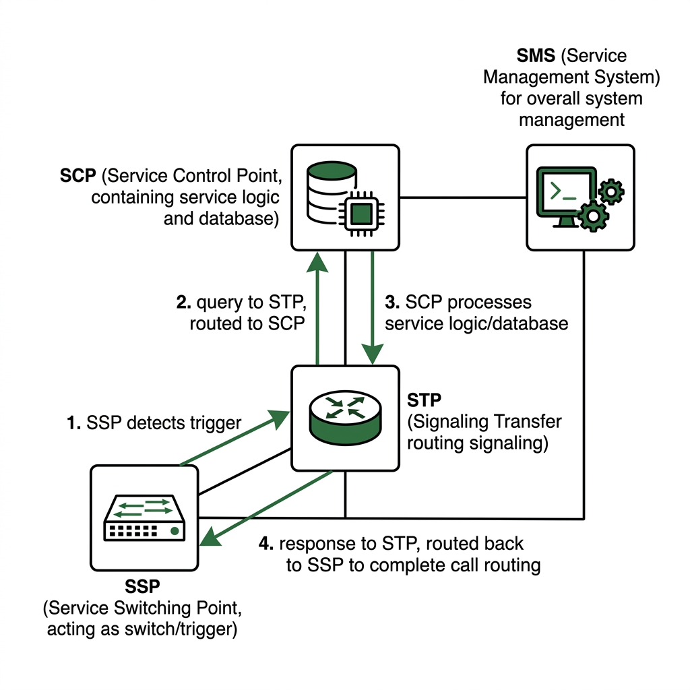
- SSP (Service Switching Point): a switch (MSC/local exchange) with IN trigger logic. When it detects a special number (e.g. 1-800, a ported number), it suspends call processing and launches a query instead of routing blindly.
- STP (Signal Transfer Point): a pure SS7 packet router. It does not originate or terminate calls — it relays signalling messages between SSPs and SCPs by global-title translation. Always mated for reliability.
- SCP (Service Control Point): the centralised brain — a database + service-logic engine. It answers the SSP's query ("route this 1-800 number to physical line X", "this prepaid balance is empty – reject") and the SSP then completes routing.
- The pay-off: service logic lives in one SCP, so a new service is deployed by editing one database, not re-programming every switch — switches stay "dumb", intelligence is centralised.
Worked Example — MTC HLR-interrogation latency budget
Estimate the signalling delay before the MS rings on an MTC. Each one-way SS7 message hop (node→STP or STP→node) takes 10 ms, and each database lookup (HLR or VLR) takes 20 ms. The interrogation path is: GMSC→STP→HLR (query), HLR→STP→VLR (MSRN request), VLR back to HLR, HLR back to GMSC.
8 hops × 10 ms = 80 ms.2 × 20 ms = 40 ms.80 ms + 40 ms = 120 ms.Boxed answer: HLR-interrogation budget ≈ 120 ms — this is the location-lookup overhead the MTC pays that the MOC does not, which is why a call to a roaming mobile sets up a fraction of a second slower than a local one.
Node-Role Table
| Node | Full form | Plane | Role in routing |
|---|---|---|---|
| MSC | Mobile Switching Centre | Bearer + control | Serving switch; sets up speech path, runs auth via VLR, pages the MS. |
| GMSC | Gateway MSC | Bearer + control | Entry point for incoming MTC; interrogates HLR for the MSRN. |
| HLR | Home Location Register | Database | Permanent subscriber record; on SRI it asks the current VLR for an MSRN. |
| VLR | Visitor Location Register | Database | Local cache of visiting subscribers; allocates the temporary MSRN. |
| SSP | Service Switching Point | Control (AIN) | Switch with IN triggers; suspends call and queries the SCP for special numbers. |
| STP | Signal Transfer Point | Control (SS7) | Packet router of SS7 messages; never holds a call, only relays signalling. |
| SCP | Service Control Point | Control (AIN) | Centralised service-logic + database; answers SSP queries with the routing decision. |
Modern Relevance
The SS7 control-plane idea did not die with 2G/3G — in LTE/4G the same roaming and service queries are carried over the IP-based Diameter protocol (interfaces such as S6a between the MME and the HSS, the LTE successor to the HLR), and AIN-style centralised service logic re-appears as the IMS (IP Multimedia Subsystem) and HSS in VoLTE networks run by Jio and Airtel. The SS7-to-Diameter migration also fixed long-standing SS7 security holes (location tracking, SMS interception) that plagued the older signalling network.
Conclusion
Wireless traffic routing splits into the outbound MOC (MS→BTS→BSC→MSC→GMSC→PSTN) and the inbound MTC, where the GMSC must first interrogate the HLR, which fetches an MSRN from the serving VLR before the MS can be paged — this is how roaming stays transparent to the caller. The whole exchange of setup messages rides the out-of-band SS7 network, and the AIN trio SSP (trigger) / STP (route) / SCP (decide) centralises the service intelligence, a pattern that survives today as Diameter and IMS in LTE.
Last-Hour Revision
Review these high-yield card summaries the morning of 10 June before entering the exam hall.
D = R√(3N). Channel assignment: FCA (Fixed) vs DCA (Dynamic). Handoff types: MAHO · MCHO · NCHO. Hard vs soft vs softer handoff. Hysteresis, dwell time, guard channels, ping-pong, cell-dragging. Co-channel interference and adjacent-channel clash. Capacity extensions: cell splitting (4× capacity), sectoring (3 × 120° sectors), microcell zone (DAS, one BTS). Grade of Service (GoS) ≤ 2%.
G_p = W/R, near-far problem, soft handover). SDMA (5G Massive-MIMO, beamforming). SSMA spread spectrum: DSSS vs FHSS. Packet radio (pure ALOHA = 18.4%, slotted ALOHA = 36.8%). CSMA. Capacity of cellular systems.
- Mobile Station: Handset + SIM (IMSI storage)
- Base Station: BTS (Air link) + BSC (Channels)
- Network Switch: MSC (Switching) + HLR/VLR
- AuC Triplet: RAND · SRES · Kc keys
Q = D / R = sqrt(3N)N sizes = i² + ij + j²- Duplex Channel = 2 × Simplex Width
- N=7 is standard cluster sweet spot
- NCHO: Network decides (1G, slow)
- MAHO: Mobile measures, MSC decides (2G, fast)
- MCHO: Mobile decides itself (DECT, instant)
- Hysteresis: Signal margin threshold
- Splitting: Subdivide to micro-cells. 4× capacity
- Sectoring: directional sector antennas. Less CCI
- Microzone: Low-power local zone antennas. No HO
- FDMA: Separate users by Frequency channels
- TDMA: Separate users by Time slots (turns)
- CDMA: Separate users by unique PN Codes
- SDMA: Separate users by Directed Beams
- DSSS: Multiplies bits by fast PN chip code
- FHSS: Hops carrier frequency rapidly
- Anti-jamming + Privacy + Multipath resistance
- GoS = Probability a call is blocked at peak
- Standard carrier target = GoS ≤ 2%
- Calculated using Erlang-B formulas
- B Channel: Bearer, 64 kbps, voice/data
- D Channel: Delta, 16 kbps, out-of-band signaling
- AIN: Decouples call-routing from switches
• Access Schemes: FDMA, TDMA, CDMA, SDMA (Frequency, Time, Code, Space)
• AuC Security Triplet: RAND · SRES · Kc
• Handoff Considerations: Hysteresis, Dwell time, Guard channels, Ping-Pong effect
🎯 Highest Exam Probability checklist
- Frequency reuse: Same channels reused in far-apart cells. Cells sharing channels = co-channel cells. Formula
D = R√(3N). - GoS (Grade of Service): Chance a call is blocked at peak hour. Standard target ≤ 2%. Used by Erlang-B.
- Scatternet: Two or more Bluetooth piconets joined by a bridge device. Like phone + earbuds + smartwatch.
- Near-far problem: Close phone drowns out far phones. Fixed by tight power control in CDMA.
- Microcell zone: Many low-power zone antennas, one central BTS. Zero classic handovers across the macro cell.
- ISDN: Digital phone line. 2B+D (BRI) = 2×64 kbps + 16 kbps signal. 30B+D (PRI) = 30×64 kbps + 64 kbps signal.
- 4G features: All-IP core (no circuit switching). 100 Mbps mobile / 1 Gbps fixed. OFDMA. Carrier aggregation. VoLTE.
- Propagation problems: Path loss, shadowing (from buildings), multipath fading (echoes), Doppler shift (motion), and same-frequency signal clash.
- ALOHA throughput: Pure ALOHA = 18.4% (G=0.5). Slotted ALOHA = 36.8% (G=1.0). Slotted is double because of fixed time slots.
D = R√(3N). Reuse ratio Q = D/R = √(3N). Cluster sizes N ∈ {1, 3, 4, 7, 9, 12}. N = 7 is the 2G GSM standard. Smaller N gives more capacity but worse S/I.- Co-channel distance:
D = R√(3N)· R = cell radius, N = cluster size. - Reuse ratio:
Q = D / R = √(3N). Dimensionless. - Allowed cluster sizes:
N = i² + ij + j²for whole numbers i, j → {1, 3, 4, 7, 9, 12, 13, 19, 21}. - Channels per cell:
(Total channels − Control channels) / N. Voice rounds down, control rounds up. - Duplex channel width:
2 × Simplex width(one uplink + one downlink). - GoS:
P_blocked = Blocked calls / Offered traffic. Target ≤ 2%. - S/I ratio:
S/I = (1/6) · Q^n. n = path-loss exponent (≈ 4). N = 7 gives ~18.7 dB. - CDMA processing gain:
G_p = W / R. W = chip rate, R = data rate. IS-95: G_p = 128 ≈ 21 dB. - Cell-splitting capacity gain:
(R / (R/2))² = 4×. Halve the radius, quadruple the capacity.